Lecture5 (deep_learning_part2_2.pdf, 38 หน้า) · 2603520 Deep Learning
บทนี้ตอบคำถามที่ Lesson 3–4 ทิ้งไว้ว่า ทำไม backprop ที่คูณหลายเทอมต่อกันถึง "พัง" เมื่อเครือข่ายลึก และอาจารย์แก้ด้วยอะไรบ้าง (activation ที่เลือกถูก, weight initialization, batch normalization, layer normalization) ก่อนจะจบด้วยการเขียนทุกอย่างเป็นโค้ด Keras จริงทีละบรรทัดตั้งแต่โหลดข้อมูล MNIST จนถึง predict. ครึ่งหลังของบทนี้คือส่วนที่ข้อสอบ "เติมโค้ด" ดึงมาใช้มากที่สุด ดังนั้นอย่าอ่านผ่าน — ให้ปิดหน้าจอแล้วเขียนโค้ดตามให้ได้เอง.
ทั้งบทนี้พูดถึง "ค่าเฉลี่ย" กับ "การกระจาย" ตลอด ถ้าสองคำนี้ยังไม่แน่น อ่านย่อหน้านี้ก่อนแล้วจะอ่านบทนี้รู้เรื่องทั้งบท. สมมติเรามีตัวเลข 4 ตัว \(z = [2,\ 4,\ 6,\ 8]\) (คิดว่าเป็นค่า \(z\) ของ neuron ตัวหนึ่งจากตัวอย่าง 4 ตัวอย่าง)
variance ใหญ่ = ข้อมูลกระจายกว้าง, variance เล็ก = ข้อมูลเกาะกลุ่มใกล้ mean. ทั้ง weight initialization (§2) และ batch normalization (§3) คือการ "จัดการ variance ของ \(z\)" ทั้งคู่
Normal distribution \(N(\mu,\sigma^2)\) คือการแจกแจงรูประฆังคว่ำ: สุ่มเลขออกมาแล้วส่วนใหญ่ตกใกล้ \(\mu\) ยิ่งห่างยิ่งเจอน้อย. เขียน \(\theta\sim N(0,1)\) แปลว่า "สุ่ม \(\theta\) จากระฆังที่ mean = 0 variance = 1" — ค่าที่ได้ส่วนใหญ่อยู่ในช่วง \(-2\) ถึง \(+2\).
กฎที่ใช้ตลอด §2: ถ้า \(A\) กับ \(B\) เป็นตัวแปรสุ่มที่อิสระต่อกัน แล้ว \(\operatorname{Var}(A+B)=\operatorname{Var}(A)+\operatorname{Var}(B)\) — variance บวกกันตรงๆ (ไม่ใช่ \(\sigma\) บวกกัน). ตัวอย่างเล็กๆ: ทอยลูกเต๋า 1 ลูก variance ≈ 2.92; ทอย 2 ลูกแล้วบวกแต้มกัน variance ≈ 5.83 = 2 เท่า ไม่ใช่เท่าเดิม. และถ้าคูณด้วยค่าคงที่ \(c\): \(\operatorname{Var}(cA)=c^2\operatorname{Var}(A)\) (ยกกำลังสองเพราะ variance เป็นหน่วยกำลังสอง).
สองกฎนี้คือทั้งหมดที่ต้องใช้พิสูจน์สูตร He/Xavier ในหัวข้อ 2 — ไม่มีอะไรยากกว่านี้
เริ่มจากปัญหาที่ผู้อ่านจะเจอจริง: คุณต่อเครือข่ายให้ลึกขึ้นเพราะเชื่อว่า "ลึกกว่า = เก่งกว่า" แต่พอกดเทรน cost กลับไม่ลดเลย (หรือพุ่งเป็น NaN ภายในไม่กี่ step). สาเหตุไม่ได้อยู่ที่ข้อมูลหรือ learning rate แต่อยู่ที่วิธีที่ gradient ถูกคำนวณ — และอาจารย์เปิดเลกเชอร์นี้ด้วยเรื่องนั้นพอดี.
สไลด์หน้า 1 กางสูตรเดียวกับที่เราหามาแล้วใน Lesson 3 §4 ให้ดูอีกครั้ง: gradient ของ weight ตัวหนึ่งใน layer \(L-1\) เท่ากับผลคูณของอนุพันธ์ 4 ตัวที่ต่อกันเป็นโซ่
$$\frac{\partial J(\theta)}{\partial\theta_{1,1}^{(L-1)}} = \frac{\partial J}{\partial z_1^{(L)}}\cdot\frac{\partial z_1^{(L)}}{\partial a_1^{(L-1)}}\cdot\frac{\partial a_1^{(L-1)}}{\partial z_1^{(L-1)}}\cdot\frac{\partial z_1^{(L-1)}}{\partial\theta_{1,1}^{(L-1)}} = \delta^{(L)}\,\theta_{1,1}^{(L)}\,g'(z_1^{[L-1]})\,a_1^{(L-2)}$$อ่านสูตรนี้เป็นภาษาคน: "ความผิดพลาดที่ปลายทาง \(\delta^{(L)}\) เดินทางย้อนกลับมาหา weight ตัวนี้ โดยระหว่างทางถูกคูณด้วย weight ของ layer ที่ผ่าน (\(\theta^{(L)}_{1,1}\)) และคูณด้วยความชันของ activation (\(g'\)) ของ layer นั้น"
คำว่า "ระหว่างทาง" คือหัวใจ. ถ้า weight ตัวที่เราสนใจอยู่ลึกลงไปอีก 10 ชั้น โซ่ก็ยาวขึ้นอีก 10 คู่ — ต้องคูณ \(\theta\) กับ \(g'\) เพิ่มอีกชั้นละคู่. อาจารย์สรุปว่าเพราะการหา gradient โดยเฉพาะที่ layer ต้นๆ ต้อง "incurs multiple steps of calculation" ผลลัพธ์คือ gradient โตlarger or smaller จนทำให้ training difficult — สังเกตว่าอาจารย์ทำสีทั้งคำว่า "ใหญ่ขึ้นหรือเล็กลง" และ "เทรนยาก" ไว้คู่กัน เพราะสองเคสนี้คือสองปัญหาที่มีชื่อเรียกเฉพาะ:
ย้ำจุดที่นักเรียนพลาดบ่อย: ทั้งสองปัญหาเกิดกับ layer ต้นๆ (earlier layers / lower layers) รุนแรงที่สุด เพราะโซ่จาก output มาถึง layer ต้นยาวที่สุด ส่วน layer สุดท้ายมีโซ่สั้นจึงแทบไม่โดนผลกระทบ. ในทางปฏิบัติคุณจะเห็นอาการ "layer ท้ายๆ เรียนได้ แต่ layer แรกๆ เหมือนถูกแช่แข็ง".
ทำไมต้องสนใจ: gradient ของ layer แรกเล็กลงเกือบ ล้านเท่า เทียบกับ layer สุดท้าย ถ้า learning rate ใช้ค่าเดียวกันทั้งเครือข่าย layer แรกก็แทบไม่ขยับ
ลึก 10 ชั้นหายไป 65%; ลึก 50 ชั้นหายไป 99.5% — ความลึกต่างหากที่ขยายปัญหา ไม่ใช่ตัวเลข 0.9
gradient ใหญ่ขึ้น 117 เท่า ⇒ ก้าวเดียวกระโดดข้ามจุดต่ำสุดไปไกล นี่คือ exploding
ตัวคูณเบี่ยงจาก 1 แค่ \(\pm10\%\) แต่พอลึก 50 layer ผลลัพธ์ต่างกันหลายหมื่นเท่า — ปัญหานี้เป็น ผลคูณสะสม (product) จึงโตแบบเลขชี้กำลัง ต่างจากผลบวกที่โตแบบเชิงเส้น. เป้าหมายของทั้งบทนี้คือ "ทำให้ตัวคูณต่อ layer อยู่ใกล้ 1"

กราฟคู่บนสไลด์หน้า 2 บอกทุกอย่าง: sigmoid ไต่จาก 0 ขึ้นไป 1 และแบนราบเมื่อ \(z\) ออกนอกช่วงประมาณ \(-4\) ถึง \(+4\); ส่วนกราฟอนุพันธ์ข้างล่างมีค่าสูงสุดเพียง 0.25 ที่ \(z=0\) แล้วดิ่งลงชิด 0 ทั้งสองข้าง. ตัวเลขจริงที่เราคำนวณไว้ตั้งแต่ Lesson 3 §5: \(g'(\pm4)=0.0177\) และ \(g'(\pm8)=0.000335\). อาจารย์จึงเขียนเป็นข้อกำหนดว่า activation ใน hidden layer should not saturate เพราะการ saturate นำไปสู่ derivative extremely close to 0.
คำว่า saturate (อิ่มตัว) หมายถึงสถานะที่ input เปลี่ยนไปเท่าไรก็ไม่ทำให้ output ขยับ — เหมือนฟองน้ำที่อมน้ำเต็มแล้ว เทน้ำเพิ่มก็ไม่ซับอีก. ถ้าเราใช้ sigmoid เป็น activation แล้วผลรวมถ่วงน้ำหนักของ input (คือ \(z\)) มีค่ามากหรือน้อยเกินไป อนุพันธ์จะประมาณ 0. ผลที่ตามมาตามสไลด์: ตอนคำนวณ gradient เพื่ออัปเดต weight การเปลี่ยนแปลงจะ "infinitesimally small" จนโมเดลไม่ดีขึ้น โดยเฉพาะที่ layer ล่าง — นี่คือ vanishing gradient problem.
สังเกตว่ามีสองเหตุผลซ้อนกันที่ทำให้ sigmoid เสี่ยง ซึ่งข้อสอบชอบเอามาสลับกัน: (ก) ต่อให้ \(z\) อยู่ตรงกลางดีที่สุด ตัวคูณก็ยังได้แค่ 0.25 (น้อยกว่า 1 อยู่ดี ⇒ หดทุกชั้น) และ (ข) ถ้า \(z\) หลุดออกไปไกล ตัวคูณแทบเป็น 0 (หดทันทีในชั้นเดียว). ข้อ (ก) แก้ไม่ได้ด้วยการ normalize แต่ข้อ (ข) แก้ได้ — และนั่นคือเหตุผลทั้งหมดของ §2 กับ §3.

อาจารย์ประกาศตรงๆ ว่า ReLU เป็น preferred choice สำหรับ hidden layers เหตุผลอยู่ที่กราฟอนุพันธ์ทางขวาของสไลด์ซึ่งเป็นเส้นตรงคงที่ที่ระดับ 1: เมื่อผลรวมถ่วงน้ำหนักเป็นบวก differentiation is 1 พอดี จึง "not increase or decrease the gradient too much". ลองแทนในสูตรจากขั้นที่ 1 ข้างบน: ตัวคูณ \(r=1\) ⇒ \(1^{50}=1\) — gradient เดินทางผ่าน 50 ชั้นแล้วยังเท่าเดิม นี่คือเหตุผลเชิงตัวเลขว่าทำไม ReLU ทำให้เครือข่ายลึกเทรนได้ ขณะที่ sigmoid ทำไม่ได้.
แต่สไลด์ก็เตือนข้อเสียสองข้อทันที ซึ่งต้องจำคู่กันเสมอ:
ทำไมทำแบบนี้: ง่ายและกันก้าวใหญ่ได้แน่นอน แต่สังเกตว่าสัดส่วนเดิม \(3:-7\) กลายเป็น \(1:-1\) ⇒ ทิศทางของก้าวเปลี่ยนไป
ตรวจ: \(\|g'\|=5\) พอดี และอัตราส่วนระหว่างสมาชิกยังเป็น \(3:-7:0.5\) เหมือนเดิม ⇒ ทิศทางเดิม แค่ก้าวสั้นลง
ทั้งสองแบบกันไม่ให้ก้าวใหญ่จนระเบิด: by value ง่ายแต่บิดทิศทาง, by norm รักษาทิศทาง. ใน Keras ตั้งที่ optimizer ได้เลย เช่น keras.optimizers.SGD(clipvalue=1.0) หรือ SGD(clipnorm=5.0).
ก่อนรอบเทรนรอบแรกจะเริ่ม เราต้องใส่ตัวเลขอะไรสักอย่างลงในทุก \(\theta\). คำถามคือ "ใส่อะไร?" — ฟังดูเป็นเรื่องเล็ก แต่สไลด์หน้า 4–8 ใช้ถึง 5 หน้าอธิบายว่าการเลือกตรงนี้ตัดสินว่าโมเดลจะเรียนได้หรือไม่เลย.
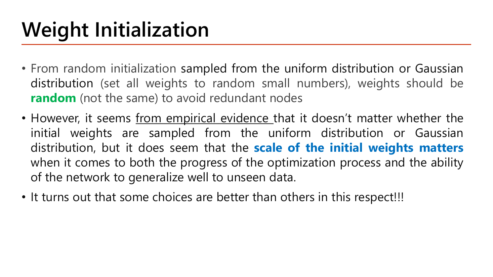
สไลด์หน้า 4 วางกติกาไว้ 2 ข้อ. ข้อแรก: เริ่มจากการสุ่มค่าเล็กๆ (จาก uniform หรือ Gaussian ก็ได้) แต่ weight ต้อง random คือ "not the same" เพื่อเลี่ยง redundant nodes — node ที่ทำงานซ้ำซ้อนกันจนเหลือค่าเท่ากับมี node เดียว (จะพิสูจน์ด้วยตัวเลขในหัวข้อ 2.1). ข้อสอง ซึ่งเป็นใจความที่อาจารย์ทำสีไว้: จากหลักฐานเชิงประจักษ์ (from empirical evidence) การเลือก uniform หรือ Gaussian แทบไม่ต่างกัน แต่ scale of the initial weights matters — "ขนาด" ของ weight เริ่มต้นต่างหากที่มีผลทั้งต่อความคืบหน้าของการ optimize และความสามารถในการ generalize กับข้อมูลที่ไม่เคยเห็น. สไลด์ปิดท้ายว่า "It turns out that some choices are better than others in this respect!!!" — คือมีสูตรที่ดีกว่าการเดา ซึ่งจะมาในหน้า 6.
ทำไมการตั้ง weight ให้เท่ากันหมด (กรณีสุดโต่งคือตั้งเป็น 0 ทุกตัว) ถึงพัง? อย่าท่องจำ ให้ลองไล่เลขดูจริงกับเครือข่ายเล็กที่สุดที่ยังมี hidden layer.
เพราะ weight เป็น 0 หมด input จึงไม่มีผลใดๆ ทั้งสอง node ได้ค่าเท่ากันเป๊ะ
ตัวเลข 0.6931 นี้จำไว้ให้ดี — เดี๋ยวจะเจอมันอีกครั้งในกราฟการทดลองหน้า 7
⇒ gradient ของ \(\theta^{[1]}\) ทุกตัวเป็น 0 ⇒ weight ชั้นแรกไม่ขยับเลย
หลังอัปเดต \(\theta^{[2]}_{11}=\theta^{[2]}_{12}\) (ไม่เป็น 0 แล้ว แต่ยังเท่ากัน)
ความสมมาตรไม่มีอะไรมาทำลาย จึงคงอยู่ตลอดการเทรน
hidden 2 node ทำงานเหมือนตัวเดียวกันตลอดกาล — ต่อให้ใส่ hidden 100 node ก็ได้กำลังการเรียนรู้เท่ากับ 1 node (นี่แหละคำว่า redundant nodes บนสไลด์หน้า 4). การสุ่มให้ \(\theta\) ต่างกันเพื่อทำลายความสมมาตรนี้เรียกว่า symmetry breaking ซึ่งเป็นคำที่อาจารย์ใช้อีกครั้งในหน้า 8.
![Slide The Problem of Random Initialization: 100 inputs x1 through x100 all equal to 1 feed a layer whose weights are generated from a normal distribution with mean 0 and variance 1; the slide asks the student to fill in blank boxes for the mean and variance of z1[1] = theta10 + theta11*x1 + ... + theta1100*x100, and states the problem that variance of inputs grows with the number of inputs and the solution var = 1/n where n is the size of the previous layer](../assets/slides/dl5-p05-problem-of-random-init.png)
สไลด์หน้า 5 ตั้งโจทย์ให้เราเติมเอง และนี่เป็นโจทย์ที่ออกสอบง่ายมากเพราะมีตัวเลขชัด: เครือข่ายมี input 100 ตัว \(x_1,\dots,x_{100}\) และกำหนดให้ทุกตัวมีค่าเท่ากับ 1; weight ถูกสร้างจาก normal distribution ที่ mean = 0, variance = 1; แล้วถามว่า \(z_1^{[1]} = \theta_{10}^{[1]} + \theta_{11}^{[1]}x_1 + \dots + \theta_{1\,100}^{[1]}x_{100}\) มี mean และ variance เท่าไร (สองช่องบนสไลด์ถูกเว้นว่างไว้). อาจารย์ยังหมายเหตุไว้ด้วยว่า "it is fine to set the weight of bias unit = 0" ⇒ เราตั้ง \(\theta_{10}=0\) ได้เลย.
ทำไม 0: เพราะเราสุ่ม weight จากระฆังที่สมมาตรรอบ 0 ค่าบวกกับค่าลบหักล้างกันพอดี
ทำไมไม่หักล้างเหมือน mean: เพราะ variance เป็นระยะห่างยกกำลังสอง จึงเป็นบวกเสมอ มีแต่บวกสะสมขึ้นเรื่อยๆ
แทบเป็นศูนย์ ⇒ ตัวอย่างส่วนใหญ่ทำให้ node นี้ saturate ตั้งแต่ layer แรกก่อนเทรนด้วยซ้ำ
คำตอบของสไลด์: mean = 0, variance = 100. นี่คือสิ่งที่อาจารย์เรียกว่า Problem — "Variance of inputs grows with the number of inputs" (variance ของ \(z\) โตตามจำนวน input ที่ต่อเข้ามา). และ Solution คือ "weights should be chosen randomly but in such a way that the sigmoid is primarily activated in its linear region" คือสุ่มแบบที่ทำให้ sigmoid ทำงานอยู่ในช่วงเชิงเส้นตรงกลาง (หลีกเลี่ยงการลด/ขยายขนาดของ \(z\)) โดยใช้ \(var = \frac{1}{n}\) เมื่อ \(n\) = จำนวน neuron ของ layer ก่อนหน้า.
ลองตรวจว่าสูตร \(var=1/n\) แก้ปัญหาจริงไหม: ถ้า \(\operatorname{Var}(\theta)=1/100=0.01\) แทนที่จะเป็น 1 จะได้ \(\operatorname{Var}(z)=100\times0.01\times1=1\) ⇒ \(\sigma_z=1\) ⇒ ค่า \(z\) ส่วนใหญ่อยู่ในช่วง \(-2\) ถึง \(+2\) ซึ่งเป็นช่วงที่ sigmoid ยังชันอยู่. สังเกตความสวยงาม: \(n\times\frac{1}{n}=1\) เสมอ ไม่ว่าชั้นนั้นจะกว้าง 10 หรือ 10,000 — สูตรนี้จึงทำให้ variance คงที่ได้ทุกความกว้าง.

ก่อนอื่นต้องเข้าใจสองคำที่สไลด์นิยามไว้มุมขวาบนด้วยภาพ node 3 ตัว: fan_in = จำนวน neuron ที่ส่งเข้ามา (ในภาพเล็กนั้น = 2) และ fan_out = จำนวน neuron ที่รับออกไป (= 1). สำหรับ layer ของ MNIST ที่ต่อ 784 → 16 จะได้ fan_in = 784 และ fan_out = 16. ทั้งสามวิธีต่างกันแค่ "หารด้วยอะไร" เท่านั้น:
| วิธี (ปี) | \(\operatorname{Var}(\theta)\) | สไลด์แนะนำให้ใช้กับ | เหตุผลที่สไลด์ให้ |
|---|---|---|---|
| LeCun (1998) | \(\dfrac{1}{\text{fan\_in}}\) | SELU | ดูจากเครือข่าย feedforward ธรรมดา คุมเฉพาะทิศ forward |
| Glorot / Xavier (2010) | \(\dfrac{2}{\text{fan\_in}+\text{fan\_out}}\) | sigmoid / tanh / softmax | คิดทั้ง forward และ backward propagation ของสัญญาณ |
| He / Kaiming (2015) | \(\dfrac{2}{\text{fan\_in}}\) | ReLU และตระกูลของมัน | ReLU มีจุดที่หาอนุพันธ์ไม่ได้ (ที่ \(z=0\)) และตัดฝั่งลบทิ้ง |
ทั้งสามวิธี "draws samples from a truncated normal distribution centered on 0" — สุ่มจากระฆังที่ mean 0 แบบ truncated คือตัดหางที่ไกลเกิน 2 เท่าของส่วนเบี่ยงเบนมาตรฐานทิ้ง เพื่อไม่ให้มี weight ตัวไหนใหญ่ผิดปกติหลุดมา. เฉพาะ Glorot สไลด์ให้ทางเลือกแบบ uniform ด้วย คือสุ่มเท่าๆ กันในช่วง \([-limit, +limit]\) โดยกล่องสูตรบนสไลด์เขียนว่า \(limit = \frac{6}{\text{fan\_in}+\text{fan\_out}}\).
ในเปเปอร์ต้นฉบับของ Glorot สูตรของแบบ uniform คือ \(limit=\sqrt{\dfrac{6}{\text{fan\_in}+\text{fan\_out}}}\) (มีรากที่สอง) และคำว่า limit บนสไลด์ก็ถูกตัดเหลือ "limi" ด้วย จึงน่าจะเป็นความคลาดเคลื่อนตอนทำสไลด์. ตรวจได้เองว่าต้องมีราก: การแจกแจงแบบ uniform บน \([-l,l]\) มี \(\operatorname{Var}=l^2/3\) ถ้าอยากให้ variance เท่ากับ \(\frac{2}{\text{fan\_in}+\text{fan\_out}}\) ก็ต้องได้ \(l^2/3=\frac{2}{n_{in}+n_{out}}\) ⇒ \(l=\sqrt{\frac{6}{n_{in}+n_{out}}}\) พอดี. ตอนสอบ: ถ้าโจทย์ให้เลือกสูตร ให้ตอบตามที่เขียนบนสไลด์ แต่ถ้าโจทย์ให้คำนวณตัวเลข ให้ใส่รากที่สอง (เช่น layer 784→16: \(\sqrt{6/800}=0.0866\) ไม่ใช่ \(6/800=0.0075\)).
\(E[a^2]\) คือ "ขนาดกำลังสองเฉลี่ยของ activation ที่ป้อนเข้ามา"
ทำไมครึ่ง: \(z\) สมมาตรรอบ 0 ⇒ ครึ่งหนึ่งเป็นลบและถูก ReLU ทำให้เป็น 0 พลังงานจึงเหลือครึ่งเดียว
เลข 2 ในตัวเศษของ He คือค่าชดเชยที่ ReLU ตัดครึ่งลบทิ้งพอดี. ถ้าใช้ LeCun \(1/n\) กับ ReLU ตัวคูณต่อชั้นจะเหลือ \(\tfrac12\) ⇒ variance หดครึ่งทุกชั้น (vanishing). ส่วน Xavier ใช้ค่าเฉลี่ยแบบฮาร์มอนิกของเงื่อนไข forward (\(1/\text{fan\_in}\)) กับ backward (\(1/\text{fan\_out}\)) จึงออกมาเป็น \(2/(\text{fan\_in}+\text{fan\_out})\).
โตขึ้น 50 เท่าทุกชั้น ⇒ exploding แบบชัดเจน
คงที่ราว 2 ตลอด 10 ชั้น ตรงตามที่พิสูจน์ไว้ (แกว่งเล็กน้อยเพราะเป็นการสุ่ม)
หายไป 99.8% ใน 10 ชั้น ⇒ vanishing
สามแถวนี้คือเหตุผลทั้งหมดว่าทำไมต้อง "จับคู่ initializer กับ activation ให้ถูก". ใน Keras เขียนที่อาร์กิวเมนต์ kernel_initializer ของ Dense: 'he_normal' (He แบบ normal), 'he_uniform', 'glorot_uniform' (ค่า default ของ Dense), 'lecun_normal'.

อ่านตัวเลขบนกราฟทั้งสามช่องแล้วเทียบกับที่เราคำนวณมา. ช่อง Zero Initialization: cost ค้างนิ่งที่ประมาณ 0.69306 ตลอด 100 บล็อกการวนซ้ำ และภาพล่างไม่มีเส้นแบ่งกลุ่มเกิดขึ้นเลย — ตรงกับที่เราคำนวณในหัวข้อ 2.1 ว่า \(-\ln 0.5 = 0.6931\) ซึ่งคือ cost ของโมเดลที่ทำนาย 0.5 ให้ทุกตัวอย่าง (เดาสุ่ม 50/50). สังเกตแกน y ของช่องนั้นด้วย: มันไล่จาก 0.69306 ถึง 0.69313 เท่านั้น แปลว่าความเปลี่ยนแปลงทั้งหมดที่เกิดขึ้นมีค่าน้อยกว่า 0.0001 — โมเดลไม่ได้เรียนอะไรเลยจริงๆ.
ช่อง Random Initialization: cost เริ่มที่ราว 0.70 แล้วแกว่งอยู่ตรงนั้นไปสิบกว่าบล็อกก่อนจะดิ่งลงมาที่ราว 0.30 และจบด้วย Training Set Accuracy: 84.142857 พร้อมเส้นแบ่งที่พอใช้ได้. ส่วนช่อง He Initialization: cost เริ่มสูงกว่าเพื่อน (ราว 1.05) แต่ดิ่งลงถึง ~0.30 ภายในไม่กี่บล็อกแรก แล้วนิ่งอยู่แถว 0.28. บทเรียนคือ ช่วงออกตัว: สุ่มธรรมดาต้องเสียเวลาหลายรอบกว่าจะหลุดจากบริเวณที่ gradient เล็ก ส่วน He ออกตัวได้ทันทีเพราะ variance ของ \(z\) ถูกคุมให้พอดีตั้งแต่ก้าวแรก. ทั้งสามช่องใช้ข้อมูลชุดเดียวกัน (Circle Dataset) และโครงสร้างเดียวกัน — ต่างกันแค่ค่าเริ่มต้นของ \(\theta\) เท่านั้น.
![Slide Issues about Weight Initialization: initialization methods can break the symmetry and address vanishing and exploding gradient problems; use He initialization for ReLU and Leaky ReLU and Xavier initialization for tanh and sigmoid; tanh/sigmoid vanishing gradients solved with Xavier; ReLU/Leaky ReLU exploding gradients solved with He; however weight initialization can not totally eliminate the vanishing or exploding gradient problems because it only controls the variance of the outputs of each layer during the first iteration of gradient descent and the weights will change in the next iterations](../assets/slides/dl5-p08-issues-weight-init.png)
หน้านี้คือหน้าที่ข้อสอบดึงไปทำตัวเลือกได้ง่ายที่สุด เพราะมีทั้ง "คู่ที่ถูก" และ "ข้อจำกัด". ประโยคแรก: วิธี initialization ช่วย break the symmetry (ทำลายความสมมาตรตามที่เราพิสูจน์ในหัวข้อ 2.1) และจัดการปัญหา vanishing/exploding ได้. จากนั้นให้คู่จับที่ต้องท่องให้ขึ้นใจ: ใช้ He initialization สำหรับ ReLU และ Leaky ReLU, ใช้ Xavier initialization สำหรับ tanh/sigmoid. อาจารย์ขยายความต่อเป็นสองบรรทัดย่อยที่ระบุปัญหาเฉพาะของแต่ละคู่ด้วย: "Tanh/Sigmoid vanishing gradients can be solved with Xavier" และ "ReLU/Leaky ReLU exploding gradients can be solved with He" — เห็นความสมเหตุสมผลไหม: sigmoid มีปัญหาฝั่งหด ส่วน ReLU มีปัญหาฝั่งระเบิด ตรงกับที่วิเคราะห์ไว้ใน §1.
แล้วปิดท้ายด้วยข้อจำกัดที่ต้องพูดได้: weight initialization not totally eliminate ปัญหา vanishing or exploding gradient problems ได้. เหตุผลอยู่ที่สองบรรทัดย่อย — มันควบคุมได้แค่ "variance of the outputs of each layer" และเฉพาะ "during the first iteration of gradient descent" เท่านั้น; พอ "the weights will change in the next iterations" ค่าเหล่านั้นก็เล็กหรือใหญ่เกินได้อีกในภายหลัง. คิดง่ายๆ ว่า initialization คือการตั้งต้นรถให้ตรงเลนตอนออกตัว ไม่ใช่ระบบพวงมาลัยที่คอยแก้เลนให้ตลอดทาง — ระบบที่คอยแก้ตลอดทางคือ Batch Normalization ในหัวข้อ 3.
หัวข้อ 2 จบด้วยข้อจำกัดว่า initialization ช่วยได้แค่รอบแรก. คำถามต่อไปจึงเป็นคำถามที่อาจารย์ตั้งไว้เองว่า "ถ้าอย่างนั้น เราคุม distribution ของ \(z\) ให้ดีทุกรอบเลยได้ไหม?" — คำตอบคือ Batch Normalization. แต่ก่อนจะถึงสูตร สไลด์หน้า 9 ย้อนกลับไปถามคำถามที่พื้นฐานกว่านั้นก่อน: ทำไมการ normalize ถึงช่วยการ optimize ตั้งแต่แรก.
![Slide Why Normalization helps Optimization: for logistic regression, unnormalized data spanning 0 to 100 on one axis and about minus 40 to 40 on the other gives elongated elliptical cost contours; shifting toward zero mean and then rescaling to a similar spread turns the contours circular; for a deep network with layers 1 to L, the caption says one should normalize z (pre-activation) or a (post-activation); the z-score formula X_new = (X - mean)/StdDev is shown with the definitions of mean and standard deviation](../assets/slides/dl5-p09-why-normalization-helps.png)
ตัวอย่างที่อาจารย์ยกคือ logistic regression ที่มี 2 feature: feature หนึ่งมีค่าตั้งแต่ 0 ถึงประมาณ 100 อีก feature หนึ่งอยู่ราว \(-40\) ถึง \(+40\). ผลคือ contour ของ cost (เส้นระดับความสูงของ \(J\)) ยืดเป็นวงรีแคบยาว และ gradient descent ต้องเดินซิกแซ็กไปมาข้ามหุบเขาแคบนั้นแทนที่จะเดินตรงลงก้นหุบ. เมื่อทำสองขั้นที่สไลด์กำกับไว้ — shift toward zero mean (ลบค่าเฉลี่ยออก) แล้ว rescale to similar spread (หารด้วยส่วนเบี่ยงเบนมาตรฐาน) — contour กลายเป็นวงกลม gradient ชี้ตรงเข้าหาจุดต่ำสุดตั้งแต่ก้าวแรก. สูตรที่สไลด์กำกับคือ z-score เดียวกับ feature scaling ใน Lesson 1 §4:
$$X_{new} = \frac{X-\mu}{\sigma},\qquad \mu = \frac{1}{n}\sum_{i=1}^{n}x_i,\qquad \sigma = \sqrt{\frac{1}{n}\sum_{i=1}^{n}(x_i-\mu)^2}$$อ่านว่า "เอาทุกค่ามาลบจุดกึ่งกลาง แล้วหารด้วยความกว้างของการกระจาย" — ผลคือชุดตัวเลขใหม่ที่ mean = 0 และ variance = 1 เสมอ ไม่ว่าข้อมูลเดิมจะมีหน่วยอะไร
แล้วอาจารย์ก็ขยายความคิดนี้ไปยัง deep neural network ครึ่งล่างของหน้า: ใน logistic regression เรา normalize ได้แค่ input ชั้นเดียวเพราะมีชั้นเดียว แต่ในเครือข่ายลึก ทุก hidden layer ก็รับ input จาก layer ก่อนหน้าเหมือนกัน ดังนั้นตามคำที่สไลด์เน้นไว้ใต้ภาพเครือข่าย เรา "should normalize z (pre-activation) or \(a\) (post-activation)" ของชั้นในด้วย ไม่ใช่แค่ข้อมูลดิบที่ป้อนเข้าไป. ประเด็นนี้คือแกนกลางของทั้งหัวข้อ 3 — และจะกลายเป็นคำถาม "วาง BN ก่อนหรือหลัง activation" ในหน้า 12–14.
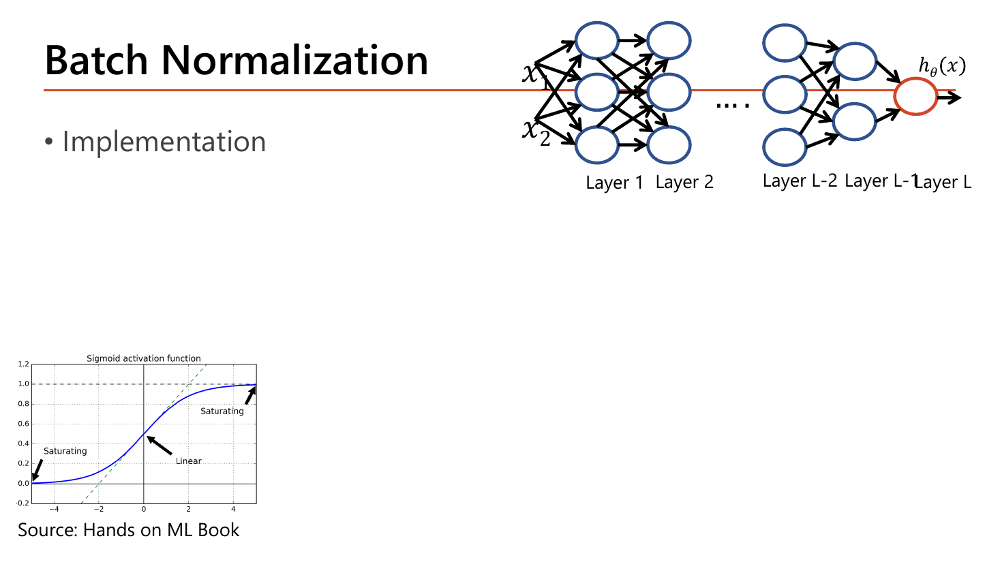
กราฟ sigmoid บนหน้า 10 ถูกแบ่งเป็นสามโซนและติดป้ายไว้: ตรงกลางราว \(z\in[-2,2]\) คือ Linear ซึ่งเส้นโค้งเกือบเป็นเส้นตรงเอียงและมีความชันดี ส่วนสองหางคือ Saturating ที่เส้นแบนราบ. นี่คือเป้าหมายของ BN อย่างเป็นรูปธรรม: ดึงค่า \(z\) ที่กระจัดกระจาย (อาจมี \(\sigma_z=10\) อย่างที่คำนวณในหน้า 5) กลับมาให้ mean 0 variance 1 ซึ่งแปลว่าตัวอย่างประมาณ 95% จะตกอยู่ในช่วง \([-2,+2]\) — พอดีกับโซน Linear. เมื่อ \(z\) อยู่โซนนี้ \(g'\) มีค่าใกล้ 0.25 (ค่าสูงสุดที่เป็นไปได้) แทนที่จะเป็น 0.00005 ⇒ gradient ไหลผ่านได้.
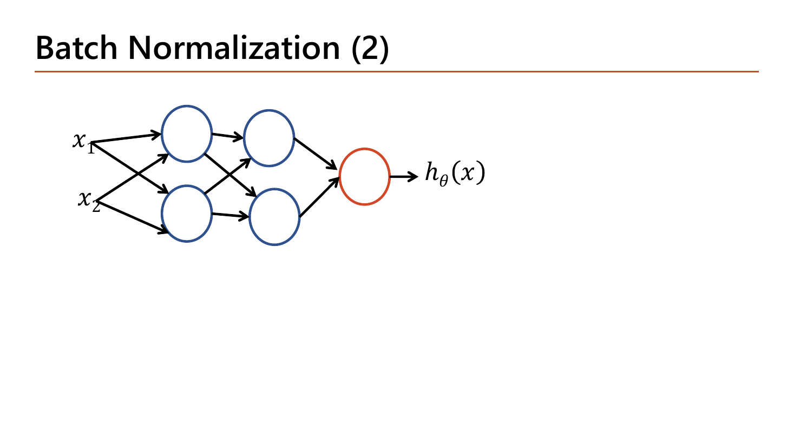
สไลด์หน้า 11 ย่อเครือข่ายให้เล็กที่สุดที่ยังอธิบายเรื่องได้ คือ 2 input → 2 hidden → 2 hidden → 1 output เพื่อใช้เป็นฉากสำหรับสูตรในหน้าถัดไป. ประโยชน์ของการย่อขนาดคือทำให้เห็นว่า BN ไม่ใช่ layer ที่เพิ่ม neuron ใหม่ — มันคือการแทรกขั้นตอนคำนวณเข้าไประหว่าง \(z\) กับ \(a\) ของ node ที่มีอยู่แล้ว. ในเครือข่ายเล็กนี้ ถ้าใส่ BN ที่ hidden layer แรก เราจะมี \(\gamma,\beta\) อย่างละ 2 ตัว (หนึ่งคู่ต่อ node) ไม่ใช่ต่อทั้ง layer — จุดนี้จะใช้ตอนนับพารามิเตอร์ในหัวข้อ 3.2.

อาจารย์นิยาม BN (Ioffe & Szegedy, 2015) ว่าคือการเพิ่ม normalized operation เข้าไปในโมเดล โดยวางได้สองตำแหน่ง คือ just before (normalize \(z\) หรือ pre-activation) หรือ after (normalize \(a\) หรือ post-activation) ของ activation function ของ each hidden layer. — ขอให้สังเกตคำว่า "แต่ละ hidden layer" ให้ดี เพราะหมายความว่าไม่ได้ทำครั้งเดียวที่ input แต่ทำซ้ำทุกชั้น. ตัวปฏิบัติการนี้มีสองขั้น:
$$\mu_B = \frac{1}{m_B}\sum_{i=1}^{m_B} \mathbf{z}^{(i)},\qquad \sigma_B^2 = \frac{1}{m_B}\sum_{i=1}^{m_B}\left(\mathbf{z}^{(i)}-\mu_B\right)^2$$ $$\mathbf{z}_{\text{norm}}^{(i)} = \frac{\mathbf{z}^{(i)}-\mu_B}{\sqrt{\sigma_B^2+\epsilon}},\qquad \tilde{\mathbf{z}}^{(i)} = \gamma\,\mathbf{z}_{\text{norm}}^{(i)} + \beta$$ขั้นที่ 1 "simply zero-centering and normalizing each input": ลบ mean ของ mini-batch แล้วหารด้วยส่วนเบี่ยงเบนมาตรฐานของ mini-batch ⇒ ได้ mean 0 variance 1. ขั้นที่ 2 "scaling and shifting the result using two new parameter vectors per layer": คูณ \(\gamma\) แล้วบวก \(\beta\)
ความหมายของสัญลักษณ์ตามที่สไลด์กำกับไว้ทุกตัว — ต้องบอกได้หมดเพราะข้อสอบชอบถามว่าตัวไหนคืออะไร: \(m_B\) คือจำนวนตัวอย่างใน mini-batch; ตัวห้อย \(B\) หมายถึง mini-batch ("B−subscripted is denoted as mini-batch"); \(\mathbf{z}_{\text{norm}}^{(i)}\) คือเวกเตอร์ของ input ที่ถูกทำให้ศูนย์กลางเป็น 0 และ normalize แล้วสำหรับตัวอย่างที่ \(i\); \(\epsilon\) คือเลขจิ๋วกันการหารด้วยศูนย์ (สไลด์ระบุว่าปกติ \(10^{-7}\)); \(\gamma\) คือเวกเตอร์พารามิเตอร์ scale ของ layer นั้น; \(\beta\) คือเวกเตอร์พารามิเตอร์ shift/offset; และ \(\tilde{\mathbf{z}}^{(i)}\) คือ output ของ BN ซึ่งเป็น "a rescaled and shifted version of the inputs". สำคัญมาก: \(\gamma\) กับ \(\beta\) เป็นพารามิเตอร์ที่เรียนรู้ได้ด้วย gradient descent เหมือน \(\theta\) ไม่ใช่ hyperparameter ที่เราตั้งเอง.
ตรวจสอบ: ผลรวมเป็น 0 ⇒ mean = 0 ✓ และ variance = 1 ✓ — ทุกค่าตอนนี้อยู่ในช่วง \(\pm1.35\) ซึ่งเป็นโซน Linear ของ sigmoid พอดี
ทำไมต้องมีขั้นที่ 4 ทั้งที่ขั้นที่ 3 ได้ mean 0 variance 1 สวยแล้ว? เพราะถ้าหยุดแค่ขั้น 3 เท่ากับเราบังคับให้ทุก layer มี distribution เดียวกันตายตัว ซึ่งอาจไม่ใช่สิ่งที่ layer นั้นต้องการ. ขั้นที่ 4 คืนอิสระให้เครือข่าย: ถ้ามันเรียนได้ว่า \(\gamma=\sqrt{\sigma_B^2}=2.236\) และ \(\beta=\mu_B=5\) ก็จะได้ \(\tilde z = z\) กลับมาเหมือนเดิมเป๊ะ (เท่ากับปิด BN เอง) — เครือข่ายเลือกเองได้ว่าจะ normalize แรงแค่ไหน.
![Slide Normalize z (pre-activation) As in paper: Keras code adding Flatten(input_shape=(28,28)), an optional commented-out BatchNormalization for 784x4, then Dense(16), BatchNormalization 16x4, Activation relu, Dense(16), BatchNormalization 16x4, Activation relu, Dense(10), BatchNormalization 10x4, Activation softmax, and model.summary; the summary table lists flatten_2 0 params, dense_4 12,560, batch_normalization_6 64, activation_3 0, dense_5 272, batch_normalization_7 64, activation_4 0, dense_6 170, batch_normalization_8 40, activation_5 0, with Total params 13,170, Trainable params 13,086 and Non-trainable params 84](../assets/slides/dl5-p13-bn-before-activation-summary.png)
แบบแรกคือแบบที่เปเปอร์ต้นฉบับทำ (สไลด์เขียนกำกับว่า "As in paper" และ "BN before Activation Function"): แยก Dense กับ Activation ออกจากกัน แล้วเสียบ BatchNormalization() ไว้ตรงกลาง ⇒ ลำดับคือ Dense → BatchNormalization → Activation. ต้องแยกแบบนี้เพราะถ้าเขียน Dense(16, activation='relu') ไปเลย Keras จะทำ activation ให้ทันทีภายใน layer เดียว เราจะไม่มีที่แทรก BN ก่อน activation ได้.
# normalize before
model = models.Sequential()
model.add(Flatten(input_shape=(28,28)))
#model.add(BatchNormalization()) # 784 x 4 (optional)
model.add(Dense(16))
model.add(BatchNormalization()) # 16x4
model.add(Activation('relu'))
model.add(Dense(16))
model.add(BatchNormalization()) # 16x4
model.add(Activation('relu'))
model.add(Dense(10))
model.add(BatchNormalization()) # 10x4
model.add(Activation('softmax'))
model.summary()| โค้ด | ทำอะไร |
|---|---|
| model = models.Sequential() | สร้างโมเดลเปล่าแบบ "ต่อกันเป็นแถวเดียว" แล้วค่อยใช้ .add() ต่อ layer ทีละชั้นตามลำดับที่เขียน |
| model.add(Flatten(input_shape=(28,28))) | แปลงภาพ 28×28 เป็นเวกเตอร์ยาว 784 ให้อัตโนมัติ; input_shape คือ shape ของหนึ่งตัวอย่าง ไม่รวมมิติ batch — output shape ที่ summary แสดงจึงเป็น (None, 784) โดย None = จำนวนตัวอย่างที่ยังไม่กำหนด |
| #model.add(BatchNormalization()) # 784 x 4 | บรรทัดนี้ถูกคอมเมนต์ไว้ (optional) — ถ้าเปิดใช้จะ normalize พิกเซล 784 ตัวโดยตรง ให้พารามิเตอร์ \(784\times4=3{,}136\) ตัว (ดูหน้า 14 ที่เปิดใช้จริง) |
| model.add(Dense(16)) | ชั้น fully-connected 16 node ไม่ใส่ activation จึงได้ \(z\) ดิบออกมา ซึ่งเป็นสิ่งที่เราต้องการ normalize; พารามิเตอร์ \(16\times(784+1)=12{,}560\) |
| model.add(BatchNormalization()) # 16x4 | normalize \(z\) ทั้ง 16 ค่าตามสูตรหน้า 12; คอมเมนต์ 16x4 บอกจำนวนพารามิเตอร์ = \(4\times16=64\) (γ, β, moving mean, moving variance อย่างละ 16) |
| model.add(Activation('relu')) | ค่อยใส่ ReLU ทีหลัง เท่ากับ \(a=g(\tilde z)\) — นี่คือจุดที่ทำให้เป็นแบบ "pre-activation" |
| model.add(Dense(10)) model.add(BatchNormalization()) model.add(Activation('softmax')) | ชั้น output 10 node (เท่ากับจำนวนคลาสของ MNIST) ตามด้วย BN (\(4\times10=40\)) แล้วปิดท้ายด้วย softmax เพื่อให้ได้ความน่าจะเป็น 10 ค่าที่รวมกันได้ 1 |
| model.summary() | พิมพ์ตารางชื่อ layer, output shape และจำนวนพารามิเตอร์ต่อชั้น พร้อมยอดรวม — ใช้ตรวจว่าโครงสร้างตรงกับที่ตั้งใจหรือไม่ |
flatten_2 (None, 784) → 0 · dense_4 (None, 16) → 12,560 · batch_normalization_6 (None, 16) → 64 · activation_3 (None, 16) → 0 · dense_5 (None, 16) → 272 · batch_normalization_7 → 64 · dense_6 (None, 10) → 170 · batch_normalization_8 (None, 10) → 40 · Total params: 13,170 · Trainable params: 13,086 · Non-trainable params: 84
\(\gamma\) (scale) และ \(\beta\) (shift) — เรียนรู้ได้ จึงเป็น trainable; moving mean และ moving variance — ใช้ตอน test เท่านั้น ไม่ได้มาจาก gradient descent จึงเป็น non-trainable
$$\text{พารามิเตอร์ของ BN หนึ่งชั้น} = 4n\quad(\text{trainable } 2n,\ \text{non-trainable } 2n)$$ตรงกับตัวเลข 64, 64, 40 ในตาราง summary ของสไลด์ทุกตัว
ตรงกับสไลด์ทั้งสามบรรทัด: Total 13,170 / Trainable 13,086 / Non-trainable 84. จุดที่ข้อสอบชอบหลอก: ตอบ \(2n\) (ลืม moving mean/variance) หรือตอบว่าทั้ง \(4n\) เป็น trainable.
![Slide Normalize a (post-activation): Keras code with Flatten(input_shape=(28,28)), BatchNormalization 784x4 optional now enabled, Dense(16, activation relu), BatchNormalization 16x4, Dense(16, activation relu), BatchNormalization 16x4, Dense(10, activation softmax), model.summary; the summary shows batch_normalization_9 with 3,136 params on 784 units, dense_7 12,560, 64, dense_8 272, 64, dense_9 170, Total params 16,266, Trainable params 14,634, Non-trainable params 1,632; a highlighted note says adding a BN layer as the very first layer means you do not need to standardize your training set](../assets/slides/dl5-p14-bn-after-activation-summary.png)
แบบที่สองคือ "BN after Activation Function": ปล่อยให้ Dense ทำ activation เองแล้วค่อย normalize ผลลัพธ์ \(a\) ⇒ ลำดับคือ Dense(activation) → BatchNormalization ซึ่งเขียนสั้นกว่าแบบแรก. หน้านี้ยังเปิดใช้ BN ที่ชั้นแรกสุดจริง (ไม่คอมเมนต์ทิ้ง) เพื่อประกอบข้อความที่อาจารย์ทำสีไว้ว่า ในหลายกรณีถ้าเรา add a BN layer เป็น first layer ของเครือข่าย เราจะ not need to standardize your training set — คือไม่ต้องไปทำ z-score ให้ข้อมูลเทรนเองก่อน เพราะ BN ชั้นแรกทำหน้าที่นั้นแทน (และทำให้อัตโนมัติกับข้อมูล test ด้วย).
# normalize after
model = models.Sequential()
model.add(Flatten(input_shape=(28,28)))
model.add(BatchNormalization()) # 784x4 (optional)
model.add(Dense(16, activation='relu'))
model.add(BatchNormalization()) # 16x4
model.add(Dense(16, activation='relu'))
model.add(BatchNormalization()) # 16x4
model.add(Dense(10, activation='softmax'))
model.summary()| โค้ด | ทำอะไร |
|---|---|
| model.add(BatchNormalization()) # 784x4 | BN ชั้นแรกสุด ทำงานกับพิกเซล 784 ตัวหลัง Flatten ⇒ \(4\times784=3{,}136\) พารามิเตอร์ (trainable 1,568 / non-trainable 1,568). นี่คือชั้นที่ทำให้ไม่ต้อง standardize ข้อมูลเอง |
| model.add(Dense(16, activation='relu')) | เขียน activation ไว้ในอาร์กิวเมนต์เลย ⇒ layer นี้คืน \(a=\mathrm{ReLU}(z)\) ออกมาโดยตรง ไม่มีช่องให้แทรก BN ก่อน activation |
| model.add(BatchNormalization()) # 16x4 | normalize ค่า \(a\) (post-activation) ที่ออกจาก ReLU ⇒ ได้ \(4\times16=64\) พารามิเตอร์เท่าเดิม เพราะจำนวน node เท่าเดิม |
| model.add(Dense(10, activation='softmax')) | ชั้น output ไม่ตาม BN ในแบบนี้ — softmax ต้องเป็นตัวสุดท้ายจริงๆ เพราะผลรวมต้องเป็น 1 ถ้าเอา BN ไปต่อท้ายจะทำลายคุณสมบัตินั้น |
flatten_3 (None, 784) → 0 · batch_normalization_9 (None, 784) → 3,136 · dense_7 (None, 16) → 12,560 · batch_normalization_10 → 64 · dense_8 (None, 16) → 272 · batch_normalization_11 → 64 · dense_9 (None, 10) → 170 · Total params: 16,266 · Trainable params: 14,634 · Non-trainable params: 1,632
ลองตรวจตัวเลขของหน้า 14 ด้วยกฎ \(4n\) เดียวกัน: BN ชั้นแรก \(4\times784=3{,}136\) ✓; ยอดรวม \(13{,}002+3{,}136+64+64=16{,}266\) ✓; non-trainable \(=2(784+16+16)=1{,}632\) ✓; trainable \(=16{,}266-1{,}632=14{,}634\) ✓. ครบทุกตัวเลขบนสไลด์ — ถ้าสอบถามว่า "เพิ่ม BN ที่ input แล้วพารามิเตอร์เพิ่มเท่าไร" คำตอบคือ 3,136 ซึ่งมากกว่า BN ชั้นในถึง 49 เท่า เพราะ 784 node มากกว่า 16 node.
Dense(16) → BatchNormalization() → Activation('relu'); แบบ post-activation: Dense(16, activation='relu') → BatchNormalization(). กับดักข้อสอบเติมโค้ด: ให้ Dense(16, activation='relu') แล้วอ้างว่าเป็น pre-activationสมมติคุณอยากรู้ "อุณหภูมิเฉลี่ยของเมืองนี้" แต่ได้ข้อมูลมาวันละค่า และไม่อยากเก็บค่าทุกวันไว้ในหน่วยความจำ. วิธีที่ใช้คือเก็บตัวเลขตัวเดียว แล้วอัปเดตทีละนิดทุกวันด้วยสูตร
$$v_{\text{new}} = \text{momentum}\cdot v_{\text{old}} + (1-\text{momentum})\cdot x_{\text{today}}$$ถ้า momentum = 0.9 แปลว่า "เชื่อของเก่า 90% เชื่อค่าวันนี้ 10%" — ค่าที่ได้จึงนิ่ง ไม่กระโดดตามค่าผิดปกติของวันเดียว. ตัวอย่าง: \(v_{old}=20\), วันนี้วัดได้ 30 ⇒ \(v_{new}=0.9(20)+0.1(30)=21\) ไม่ใช่ 30. ยิ่ง momentum ใกล้ 1 ยิ่งนิ่งแต่ยิ่งตามช้า. นี่คือ Exponentially Weighted Average ตัวเดียวกับที่ใช้ใน Momentum optimizer (Lesson 4 §4) — ใน BN เราใช้มันเก็บ \(\mu\) และ \(\sigma^2\) ของทุก mini-batch ไว้ใช้ตอน test

ปัญหาที่หน้านี้แก้คือปัญหาที่ผู้อ่านน่าจะนึกออกเองแล้วตั้งแต่เห็นสูตร: สูตร BN ต้องใช้ \(\mu_B,\sigma_B^2\) ของ mini-batch — แล้วตอนใช้งานจริงที่มีรูปให้ทำนายแค่รูปเดียวล่ะ เอา mean จากไหน? อาจารย์แยกตอบเป็นสองสถานะ. ที่ training time อัลกอริทึมต้องประมาณ mean และ standard deviation ของแต่ละ input โดย evaluating the mean and standard deviation of each input over the current mini-batch คือคำนวณสดจาก batch ที่กำลังวิ่งอยู่. ส่วนที่ test time "the whole test instance is used (not mini-batch)" ทางแก้หนึ่งคือหา moving average of means and standard deviations of all mini-batch ที่สะสมไว้ระหว่างเทรน แล้วใช้ค่านั้นมา normalize ตัวอย่าง test. และ Momentum คือ hyperparameter ที่ BN layer ใช้ตอนอัปเดต exponential moving average เหล่านั้น.
เหตุผลที่ต้องทำแบบนี้ไม่ใช่แค่ "ไม่มี batch": ต่อให้มี test set ทั้งก้อน เราก็ไม่ควรให้ผลทำนายของรูปหนึ่งขึ้นกับว่ามันถูกจัดอยู่ในกลุ่มกับรูปไหน — โมเดลที่ดีต้องให้คำตอบเดิมเสมอสำหรับ input เดิม. การใช้ moving average ที่คงที่จึงรับประกันข้อนี้ และนี่คือพารามิเตอร์ non-trainable \(2n\) ตัวที่เรานับไว้ในหัวข้อ 3.2.
ถ้า momentum เป็น 0.9 แทน จะได้ \(0.9(4.8)+0.1(5)=4.82\) ⇒ ขยับเร็วกว่า 10 เท่า
momentum สูง (0.99) ⇒ ค่านิ่งมาก ทนต่อ batch ที่ผิดปกติ แต่ถ้าเทรนไม่กี่ epoch ค่าอาจยังตามไม่ทันสถิติจริง; momentum ต่ำ ⇒ ตามไว แต่แกว่ง. Lesson 6 แนะนำให้ลอง 0.9 / 0.99 / 0.999 เป็นตัวเลือกในการจูน.
![Slide Issues about Batch Normalization (2): BN increases both speed of training and accuracy; it helps prevent pre or post activations becoming too small (vanishing gradients) or too large (exploding gradients); although BN introduces an extra computation at each layer that takes more time per epoch, convergence may be faster since fewer epochs are needed; BN allows much higher learning rates and being less careful about initialization; it weakens the coupling between earlier and later layers; BN allows each layer to learn more independently, making gradients more stable between layers](../assets/slides/dl5-p16-bn-advantages.png)
หน้านี้คือรายการข้อดีที่ออกสอบแบบ "ข้อใดไม่ใช่ข้อดีของ BN" ได้ทันที จึงต้องไล่ให้ครบทีละข้อพร้อมเหตุผล. ข้อแรก BN ช่วย prevent pre or post activations ไม่ให้กลายเป็น too small (vanishing gradients) หรือ large (exploding gradients) — สังเกตว่าอาจารย์พูดถึงทั้ง pre (\(z\)) และ post (\(a\)) สอดคล้องกับสองตำแหน่งวางในหน้า 13–14.
ข้อสองเป็นข้อที่ดูขัดแย้งในตัวเองแต่ต้องอธิบายให้ถูก: BN ทำให้เกิด extra computation ในทุกชั้น ซึ่งกินเวลาต่อ epoch มากขึ้น แต่ convergence may be faster เพราะใช้จำนวน epoch น้อยลงกว่าจะลู่เข้า. พูดเป็นตัวเลขสมมติให้เห็นภาพ: ถ้าไม่มี BN ใช้ 100 epoch × 10 วินาที = 1,000 วินาที; มี BN ใช้ 30 epoch × 13 วินาที = 390 วินาที — ช้าลงต่อ epoch แต่เร็วขึ้นโดยรวม. อย่าตอบว่า BN ทำให้แต่ละ epoch เร็วขึ้น เพราะสไลด์บอกตรงข้าม.
ข้อสาม BN ทำให้ใช้ higher learning rates ได้มาก (เหตุผลในวงเล็บของสไลด์: "no extreme values in the normalized activations" — เมื่อไม่มีค่าสุดโต่ง ก้าวใหญ่ก็ไม่พาให้ระเบิด) และทำให้เรา less careful about initialization คือไม่ต้องพิถีพิถันเรื่องค่าเริ่มต้นมากเท่าเดิม (เพราะต่อให้เริ่มด้วย variance ผิด BN ก็ดึงกลับให้ทุกรอบ — นี่คือคำตอบของข้อจำกัดในหน้า 8 พอดี). ข้อสี่ BN "weakens the coupling of the learning process between the earlier and later layers" คือคลายความผูกพันระหว่าง layer ต้นกับ layer ปลาย ⇒ แต่ละ layer เรียนได้ independently มากขึ้น ⇒ ทำให้ gradient stable ขึ้นระหว่างชั้น. เหตุผลเบื้องหลัง — เสริมความเข้าใจ (นอกสไลด์): ถ้าไม่มี BN เมื่อ layer 1 ขยับ distribution ของ input ที่ layer 5 เห็นก็เปลี่ยนตาม layer 5 ต้องเรียนใหม่ไปเรื่อยๆ; BN ตรึง mean/variance ที่ layer 5 เห็นไว้ให้คงที่ layer 5 จึงไม่ต้องไล่ตาม.
![Slide Issues about Batch Normalization (3): BN offers some regularization; if we work on a small batch of instances the statistics computed over the batch would be unreliable due to stochastic properties; BN can be added with dropout, preferably add dropout after BN, because applying dropout before normalization changes the mean and variance of the activations and negates the benefits; the code box shows Dense(16), BatchNormalization, Activation relu, Dropout(0.2) repeated twice, then Dense(10), BatchNormalization, Activation softmax](../assets/slides/dl5-p17-bn-regularization-dropout.png)
อาจารย์บอกว่า BN ให้ regularization. มาด้วยในตัว — เหตุผลอยู่ในบรรทัดถัดมา: ถ้าเราทำงานกับ a small batch of instances การคำนวณสถิติจากตัวอย่างใน batch นั้นจะ "unreliable (stochastic properties)" คือไม่น่าเชื่อถือเพราะสุ่มแกว่ง. ความแกว่งนี้ทำหน้าที่เหมือน noise ที่ใส่เข้าไปตอนเทรน ซึ่งกันไม่ให้โมเดลจำข้อมูลเทรนได้แม่นเกินไป — กลไกเดียวกับที่ dropout ทำงาน. แต่นี่เป็นดาบสองคม: ถ้า batch เล็กเกินไป สถิติก็เพี้ยนจน BN ทำงานได้แย่ลงจริงๆ.
จากนั้นสไลด์ระบุว่า BN ใช้ร่วมกับ dropout. ได้ แต่ควร add dropout after BN — วาง dropout ไว้หลัง BN. เหตุผลที่อาจารย์ให้: "If you apply dropout before normalization, the mean and variance of the activations could change, negating the benefits of batch normalization" คือ dropout ปิด node แบบสุ่ม ทำให้ mean/variance ของ activation เปลี่ยนไป ถ้า BN มาคำนวณสถิติทีหลังก็จะได้สถิติของข้อมูลที่ถูกเจาะรูแล้ว ผลดีของ BN จึงถูกล้างทิ้ง. ลองคิดเป็นตัวเลข: activation \([1,2,3,4]\) มี mean 2.5; ถ้า dropout ปิดสองตัวหลังแล้วคูณชดเชย \(1/0.5\) ได้ \([2,4,0,0]\) mean กลายเป็น 1.5 — BN ที่ตามมาจะ normalize ด้วย mean ที่ผิดจากความจริง.
model = models.Sequential()
model.add(Flatten(input_shape=(28,28)))
#model.add(BatchNormalization()) # 784 x 4 (optional)
model.add(Dense(16))
model.add(BatchNormalization()) # 16x4
model.add(Activation('relu'))
model.add(Dropout(0.2))
model.add(Dense(16))
model.add(BatchNormalization()) # 16x4
model.add(Activation('relu'))
model.add(Dropout(0.2))
model.add(Dense(10))
model.add(BatchNormalization()) # 10x4
model.add(Activation('softmax'))| โค้ด | ทำอะไร |
|---|---|
| model.add(Dense(16)) model.add(BatchNormalization()) | โครงเดิมจากหน้า 13 (แบบ pre-activation) — สไลด์กำกับใต้ภาพว่า "an example of adding BN before activation function" |
| model.add(Activation('relu')) | activation มาหลัง BN ⇒ ReLU ได้รับค่าที่ normalize แล้ว จึงไม่มีค่าสุดโต่งเข้ามา |
| model.add(Dropout(0.2)) | บรรทัดที่เป็นหัวใจของหน้านี้: dropout อยู่หลังสุด ของบล็อก ตามคำแนะนำ "add dropout after BN"; 0.2 คือ rate = สัดส่วน node ที่ถูกปิด (20%) ไม่ใช่สัดส่วนที่เก็บไว้ |
| (บล็อกที่ 2 ซ้ำแบบเดียวกัน) | Dense → BN → Activation → Dropout อีกชุดสำหรับ hidden layer ที่สอง — รูปแบบนี้คือ "บล็อกมาตรฐาน" ที่ควรจำให้ขึ้นใจสำหรับข้อสอบเติมโค้ด |
| model.add(Dense(10)) model.add(BatchNormalization()) model.add(Activation('softmax')) | ชั้น output ไม่มี Dropout — ถ้าปิด node ของชั้น output แบบสุ่ม ความน่าจะเป็นของคลาสจะหายไปดื้อๆ |
โค้ดชุดนี้เพียงประกาศโครงสร้าง จึงยังไม่พิมพ์อะไรออกมา; ถ้าเรียก model.summary() ต่อ จะได้ตารางเหมือนหน้า 13 ทุกประการบวกแถว dropout สองแถวที่มี Param # = 0 — เพราะ dropout ไม่มีพารามิเตอร์ที่ต้องเรียนรู้เลย มันแค่สุ่มปิด node ตอน forward เท่านั้น. ยอดรวมจึงยังเป็น Total params 13,170 เท่าเดิม
หัวข้อ 3 จบด้วยจุดอ่อนที่ชัดเจนของ BN คือมันพึ่งพา batch. อาจารย์จึงตั้งคำถามต่อในหน้า 18 ว่า "BatchNorm normalizes each neuron across examples. What if we instead normalize the neurons within each individual example?" — แทนที่จะเฉลี่ยข้ามตัวอย่าง ทำไมไม่เฉลี่ยข้าม neuron ภายในตัวอย่างเดียวไปเลย?
![Slide From Batch Normalization to Layer Normalization with a worked example: a layer has 3 neurons and batch size 4, z is the matrix with rows (3,1000,0), (2,800,1), (4,1200,1), (3,900,0); BN normalizes down each column giving mu_1B = (3+2+4+3)/4 = 3, mu_2B = (1000+800+1200+900)/4 = 975, mu_3B = (0+1+1+0)/4 = 0.5; LayerNorm by Ba, Kiros and Hinton 2016 normalizes within each example, with mu^(1) = (3+1000+0)/3 = 334.33 and mu^(2) and mu^(m) left blank; LN also uses scaling and shifting with learnable gamma and beta](../assets/slides/dl5-p18-batchnorm-to-layernorm.png)
ตัวอย่างบนสไลด์ตั้งใจเลือกตัวเลขให้เห็นประเด็นชัด: layer มี 3 neuron และ batch size = 4 ได้เมทริกซ์
$$z = \begin{bmatrix}3 & 1000 & 0\\ 2 & 800 & 1\\ 4 & 1200 & 1\\ 3 & 900 & 0\end{bmatrix}\quad\begin{array}{l}\text{แถว} = \text{ตัวอย่างที่ }1..4\\ \text{คอลัมน์} = \text{neuron ที่ }1..3\end{array}$$สังเกตว่า neuron ที่ 2 มีค่าอยู่ในหลักพัน ส่วน neuron ที่ 1 และ 3 อยู่ในหลักหน่วย — เหมือน feature ที่มีหน่วยต่างกันมากในตัวอย่าง logistic regression หน้า 9. อาจารย์บอกว่า "BN conceptually normalizes down each column" คือไล่ลงตามคอลัมน์ แล้วคำนวณให้ดูครบทั้งสาม: \(\mu_{1B}=\frac{3+2+4+3}{4}=3\), \(\mu_{2B}=\frac{1000+800+1200+900}{4}=975\), \(\mu_{3B}=\frac{0+1+1+0}{4}=0.5\). แต่ละ neuron ได้ mean ของตัวเอง ⇒ หลัง normalize ทั้งสาม neuron จะมี mean 0 variance 1 เท่ากันหมด ความต่างเรื่องสเกลถูกลบทิ้งพอดี.
ส่วน LayerNorm (Ba, Kiros & Hinton, 2016) normalize "within each example" คือไล่ตามแถว. สไลด์ทำตัวอย่างแรกให้ดูแล้วเว้นที่เหลือไว้เป็นโจทย์: \(\mu^{(1)}=\frac{3+1000+0}{3}=334.33\) ส่วน \(\mu^{(2)}=\dots\) และ \(\mu^{(m)}=\dots\) ถูกทิ้งว่าง เรามาเติมให้ครบ.
คำตอบของสไลด์: \(\mu^{(2)}=267.67\), \(\mu^{(3)}=401.67\), \(\mu^{(4)}=301\). สังเกตข้อสังเกตสำคัญจากขั้นที่ 4: LayerNorm เอาเลข 3 กับ 1000 ซึ่งคนละหน่วยมาเฉลี่ยรวมกัน ผลคือ neuron ที่ 1 และ 3 ถูกบีบให้เกือบเท่ากัน (\(-0.704\) กับ \(-0.710\)) ความต่างระหว่างสอง neuron นี้แทบหายไป — ต่างจาก BN ที่ normalize แยกต่อ neuron จึงรักษาความต่างนั้นไว้ได้. สไลด์ยังย้ำว่า "Similar to BN, LN also uses Scaling and shifting" คือมี \(\gamma\) และ \(\beta\) ที่เรียนรู้ได้เหมือนกัน.
BN: แต่ละ neuron เหลือค่าเดียว ⇒ \(z-\mu_B = 0\) ทุกตัว ⇒ output เป็น \(\beta\) ล้วน ข้อมูลหายหมด. LayerNorm: ยังมี 4 neuron ให้เฉลี่ยตามปกติ ⇒ ทำงานได้เหมือนเดิมทุกประการ
ข้อสรุปที่ต้องจำ: ทั้งสองใช้สูตรเดียวกัน ต่างกันแค่ "แกนที่เฉลี่ย" — BN เฉลี่ยข้ามตัวอย่าง (คอลัมน์), LN เฉลี่ยข้าม feature ภายในตัวอย่าง (แถว).
![Slide Why Layer Normalization: independent of batch size because normalization does not depend on other examples in the mini-batch, stable for large-scale Transformer training as it avoids dependence on noisy or changing batch statistics, and same normalization behavior during training and inference; a comparison table states Batch Normalization normalizes across examples in a mini-batch, depends on batch statistics and is common in CNNs, while Layer Normalization normalizes across features within each example, is independent of batch statistics and is common in Transformers and LLMs](../assets/slides/dl5-p19-why-layer-normalization-table.png)
สไลด์หน้า 19 สรุปข้อดีของ LN ไว้ 3 ข้อ ซึ่งทั้งสามข้อเป็นผลโดยตรงจากการเปลี่ยนแกนที่เฉลี่ย. หนึ่ง Independent of batch size — การ normalize ไม่ขึ้นกับตัวอย่างอื่นใน mini-batch เลย (ตรงกับขั้นที่ 4 ที่เราคำนวณไว้: batch = 1 ก็ยังทำงาน). สอง Stable for large-scale Transformer training — เลี่ยงการพึ่งสถิติ batch ที่ noisy หรือเปลี่ยนไปเรื่อยๆ ซึ่งสำคัญมากเมื่อเทรนโมเดลใหญ่ที่ batch ต่อการ์ดจอมีไม่กี่ตัวอย่าง. สาม Same normalization behavior during training and inference — ไม่ต้องมี moving average ให้ต่างกันสองโหมดเหมือน BN จึงไม่มีบั๊กประเภท "เทรนดีแต่ตอน predict เพี้ยน".
ตารางท้ายหน้าเทียบสามแถว: BN "Normalizes across examples in a mini-batch" / LN "Normalizes across features within each example"; BN "Depends on batch statistics" / LN "Independent of batch statistics"; BN "Common in CNNs" / LN "Common in Transformers / LLMs". แถวสุดท้ายนี้อธิบายได้ด้วยเหตุผลจากขั้นที่ 4 ของโจทย์หน้า 18: ใน CNN แต่ละ channel คือ feature ชนิดเดียวกันที่ scale ใกล้กัน BN จึงเหมาะ; ใน Transformer มิติของ embedding อยู่ใน scale เดียวกันภายในโทเค็นเดียว และ batch มักเล็ก LN จึงเหมาะกว่า.
ถึงจุดนี้เรามีทฤษฎีครบแล้ว — ที่เหลือคือ "แล้วเขียนเป็นโค้ดยังไง". ครึ่งหลังของเลกเชอร์ (หน้า 20–38) คือส่วนนี้ทั้งหมด และเป็นส่วนที่ข้อสอบเติมโค้ดดึงไปใช้โดยตรง. อ่านทุกบรรทัดให้เข้าใจว่าอาร์กิวเมนต์แต่ละตัวทำอะไร ไม่ใช่แค่จำหน้าตา เพราะข้อสอบมักสลับชื่ออาร์กิวเมนต์หรือสลับลำดับ layer.
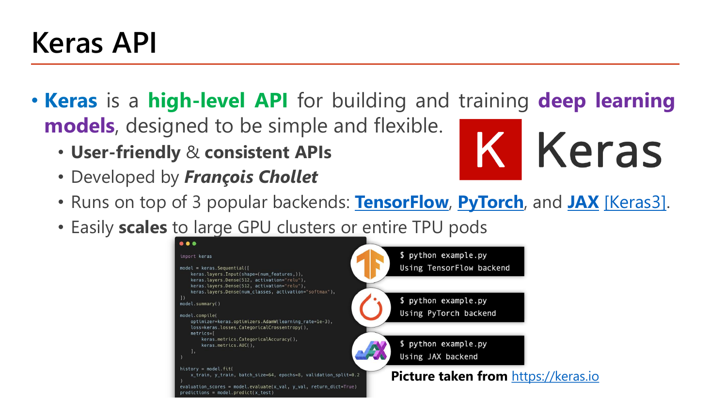
Keras คือ high-level API สำหรับสร้างและเทรน deep learning models ที่ออกแบบให้เรียบง่ายและยืดหยุ่น. คำว่า high-level หมายถึงเราสั่งด้วยภาษาระดับแนวคิด ("ขอ Dense 16 node ที่ใช้ relu") แล้วเครื่องมือไปจัดการรายละเอียดการคูณเมทริกซ์ การหาอนุพันธ์ และการจัดการหน่วยความจำให้เอง — เทียบกับตอนที่เราเขียน backprop ด้วยมือใน Lesson 3 ที่ต้องไล่ทุก \(\delta\) เอง. จุดอื่นที่สไลด์ระบุ: API ใช้ง่ายและสม่ำเสมอ (user-friendly & consistent), พัฒนาโดย François Chollet, รันบน backend ยอดนิยมได้ 3 ตัวคือ TensorFlow, PyTorch และ JAX (ตั้งแต่ Keras 3) โดยโค้ดชุดเดียวกันรันได้ทุก backend, และขยายขึ้นไปทำงานบนคลัสเตอร์ GPU ขนาดใหญ่หรือ TPU pod ทั้งชุดได้.
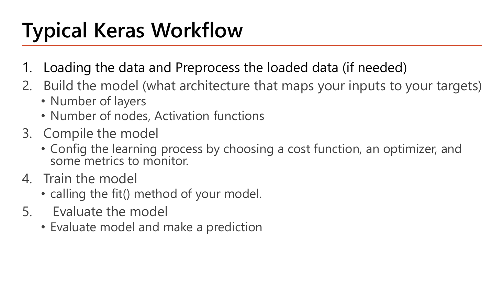
ห้าขั้นตอนบนหน้า 21 คือโครงของทุกโปรเจกต์ Keras และเป็นโครงของหัวข้อ 5 นี้ทั้งหัวข้อ: (1) Loading the data and Preprocess — โหลดข้อมูลและเตรียม (ถ้าจำเป็น); (2) Build the model — เลือกสถาปัตยกรรมที่จับคู่ input กับ target โดยต้องตัดสินใจ "จำนวน layer" และ "จำนวน node กับ activation function"; (3) Compile the model — ตั้งค่ากระบวนการเรียนรู้โดยเลือก cost function, optimizer และ metric ที่จะเฝ้าดู; (4) Train the model — เรียกเมท็อด fit(); (5) Evaluate the model — ประเมินผลและทำนาย. สังเกตว่าลำดับนี้ห้ามสลับ: จะ fit() ไม่ได้ถ้ายังไม่ compile() เพราะโมเดลยังไม่รู้ว่าจะย่อ loss ตัวไหนด้วย optimizer อะไร.
![Slide Begin with Circle Dataset showing a complete Keras script building a Sequential model with three Dense(10, relu, he_normal) hidden layers and a Dense(1, sigmoid) output, compiling with Adam learning_rate 0.03 and binary_crossentropy, fitting for 50 epochs with batch_size 150, and evaluating; below are a loss/accuracy curve over 50 epochs, the circle-shaped decision boundary on the two-class scatter plot, and the training log showing per-epoch loss around 0.38 to 0.53 and val_accuracy around 0.70 to 0.88](../assets/slides/dl5-p22-circle-dataset-keras-code.png)
ก่อนจะลุย MNIST อาจารย์ให้ดูสคริปต์สั้นที่มีครบทั้ง 5 ขั้นในหน้าเดียวบนชุดข้อมูล Circle (จุดสองกลุ่มวางเป็นวงแหวนซ้อนกัน แยกด้วยเส้นตรงไม่ได้ — ตัวอย่างเดียวกับที่ใช้ทดลอง initialization ในหน้า 7). ข้อมูลมี 2 feature ต่อจุด จึงเห็น input_shape=(2,) และเป็นปัญหา 2 คลาส จึงจบที่ Dense(1, activation='sigmoid').
model = models.Sequential()
model.add(Dense(10, activation='relu', kernel_initializer='he_normal', input_shape=(2,)))
model.add(Dense(10, activation='relu', kernel_initializer='he_normal'))
model.add(Dense(10, activation='relu', kernel_initializer='he_normal'))
model.add(Dense(1, activation='sigmoid'))
model.compile(optimizer=keras.optimizers.Adam(learning_rate=0.03),
loss='binary_crossentropy', metrics=['accuracy'])
history = model.fit(X, y, validation_data=(Xval, yval), epochs=50, batch_size=150)
loss, acc = model.evaluate(Xtest, ytest)| โค้ด | ทำอะไร |
|---|---|
| model = models.Sequential() | ขั้นที่ 2 ของ workflow: สร้างโมเดลเปล่าแบบเรียงต่อกันชั้นเดียว แล้วใช้ .add() ต่อ layer |
| Dense(10, activation='relu', kernel_initializer='he_normal', input_shape=(2,)) | hidden layer แรก: 10 node; activation='relu' ตามคำแนะนำหน้า 3; kernel_initializer='he_normal' คือ He initialization ซึ่งจับคู่กับ ReLU ตามหน้า 8 (ถ้าไม่ระบุ Keras ใช้ glorot_uniform); input_shape=(2,) คือ shape ของหนึ่งตัวอย่าง = 2 feature — ใส่เฉพาะ layer แรกเท่านั้น |
| Dense(10, ...) อีก 2 บรรทัด | hidden layer ที่ 2 และ 3 ไม่ต้องระบุ input_shape แล้ว เพราะ Keras อนุมานจาก output ของ layer ก่อนหน้าได้เอง (คือ 10) |
| Dense(1, activation='sigmoid') | output layer: 1 node เพราะเป็น binary classification และใช้ sigmoid เพื่อให้ได้ความน่าจะเป็น 0–1 (ตรงกับตารางในหน้า 34) |
| optimizer=keras.optimizers.Adam(learning_rate=0.03) | ขั้นที่ 3: สร้าง optimizer เป็นออบเจ็กต์เพื่อกำหนด learning_rate เอง (ถ้าเขียน optimizer='adam' เฉยๆ จะได้ค่า default 0.001); 0.03 ถือว่าสูงมาก ใช้ได้เพราะข้อมูลง่ายและ He init คุม variance ไว้ |
| loss='binary_crossentropy' | cost function สำหรับ 2 คลาส คือ \(-[y\ln\hat y+(1-y)\ln(1-\hat y)]\) จาก Lesson 1 §8 — ต้องจับคู่กับ sigmoid ที่ output |
| metrics=['accuracy'] | ค่าที่อยาก "เฝ้าดู" ระหว่างเทรน ไม่ได้ถูก optimize; ต้องเป็น list เสมอ (มีวงเล็บเหลี่ยม) |
| history = model.fit(X, y, validation_data=(Xval, yval), epochs=50, batch_size=150) | ขั้นที่ 4: validation_data รับ tuple ของชุด validation ที่แยกไว้แล้ว; epochs=50 = วนข้อมูลทั้งชุด 50 รอบ; batch_size=150 = อัปเดต \(\theta\) หนึ่งครั้งต่อ 150 ตัวอย่าง; ค่าที่คืนกลับคือออบเจ็กต์ history ที่เก็บ metric ทุก epoch |
| loss, acc = model.evaluate(Xtest, ytest) | ขั้นที่ 5: คืนค่า สองค่าตามลำดับ คือ loss ก่อน แล้วตามด้วย metric ที่ระบุใน compile (ที่นี่คือ accuracy) — ลำดับนี้ออกสอบบ่อย |
แต่ละ epoch พิมพ์บรรทัดแบบ 1/1 ━━━━ 0s 29ms/step - loss: 0.4232 - accuracy: 0.8333 - val_loss: 0.5438 - val_accuracy: 0.7300; ช่วง epoch 18–28 ค่า loss ไล่จากราว 0.53 ลงมาราว 0.38 และ val_accuracy ขยับจากราว 0.70 ขึ้นไปราว 0.88. กราฟทางซ้ายแสดงว่า acc กับ val_acc ไต่ขึ้นไปใกล้ 0.9 ขณะที่ loss ลดลงต่อเนื่อง ส่วน val_loss เริ่มแบนหลัง epoch ~40 และเส้นแบ่งที่ได้เป็นวงกลมล้อมกลุ่มจุดสีแดงตรงกลางพอดี
input_shape=(2,) ต้องมีจุลภาคหลังเลข เพราะเป็น tuple 1 มิติ — เขียน (2) จะกลายเป็นจำนวนเต็มธรรมดา; และใส่เฉพาะ layer แรกDense(1, activation='sigmoid') ↔ loss='binary_crossentropy'. กับดัก: ให้ Dense(2, activation='softmax') คู่กับ binary_crossentropykernel_initializer='he_normal' ↔ ReLU (ไม่ใช่ 'glorot_uniform' ซึ่งคู่กับ tanh/sigmoid)evaluate คืน: loss, acc — ไม่ใช่ acc, losskeras.optimizers.Adam(learning_rate=0.03) — ชื่ออาร์กิวเมนต์คือ learning_rate (ไม่ใช่ lr หรือ alpha)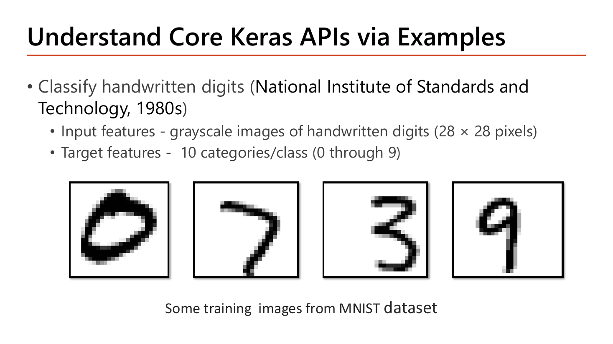
งานคือจำแนกตัวเลขเขียนมือจากชุดข้อมูลของ National Institute of Standards and Technology (ยุค 1980s). Input features คือภาพระดับเทา (grayscale) ขนาด \(28\times28\) พิกเซล ซึ่งแปลว่าหนึ่งภาพมีตัวเลข \(28\times28=784\) ค่า แต่ละค่าคือความเข้มของพิกเซลในช่วง 0–255 (0 = ดำสนิท, 255 = ขาวสุด). Target features คือ 10 คลาส (0 ถึง 9) ⇒ output layer ต้องมี 10 node พอดี. ตัวอย่างภาพ 4 รูปบนสไลด์ (เลข 0, 7, 3 และ 9) แสดงให้เห็นว่าลายมือแต่ละคนต่างกันมาก — เลข 9 ในภาพมีหัวกลมเล็กและหางตรง ขณะที่เลข 7 ลากเฉียงยาว — นี่คือเหตุผลที่ต้องใช้เครือข่ายเรียนรู้แทนการเขียนกฎเอง.
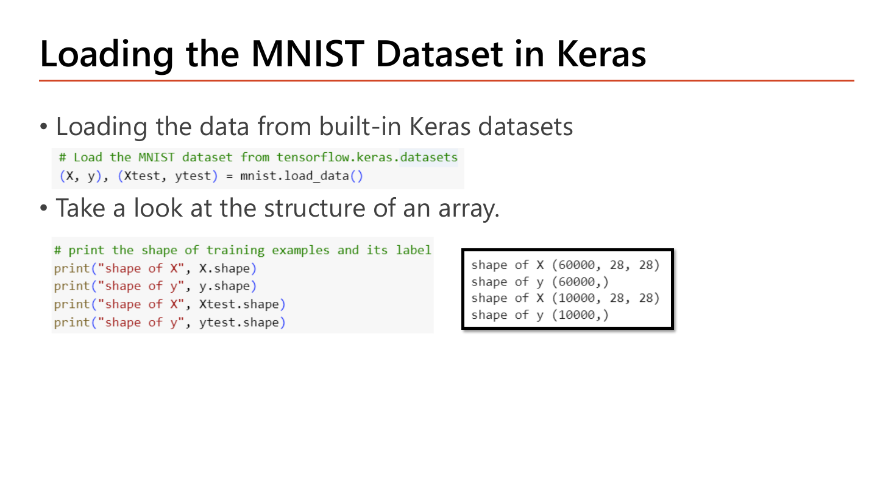
Keras มีชุดข้อมูลมาตรฐานติดมาในตัว จึงโหลดได้ด้วยบรรทัดเดียวโดยไม่ต้องดาวน์โหลดเอง. สิ่งที่ต้องสังเกตให้ดีคือ รูปแบบของค่าที่คืนกลับ ซึ่งเป็น tuple ซ้อน tuple.
# Load the MNIST dataset from tensorflow.keras.datasets
(X, y), (Xtest, ytest) = mnist.load_data()
# print the shape of training examples and its label
print("shape of X", X.shape)
print("shape of y", y.shape)
print("shape of X", Xtest.shape)
print("shape of y", ytest.shape)| โค้ด | ทำอะไร |
|---|---|
| (X, y), (Xtest, ytest) = mnist.load_data() | ฟังก์ชันคืนค่าเป็น tuple สองชั้น: ก้อนแรกคือชุดเทรน (ภาพ, ป้าย) ก้อนที่สองคือชุดทดสอบ — Keras แบ่ง train/test มาให้แล้ว เราจึงไม่ต้องเรียก train_test_split เอง (เทียบกับหน้า 36 ที่เป็นกรณีข้อมูลยังไม่แบ่ง) |
| X.shape | มิติของอาร์เรย์: (60000, 28, 28) อ่านว่า 60,000 ภาพ แต่ละภาพเป็นตาราง 28 แถว × 28 คอลัมน์ — ยังเป็นอาร์เรย์ 3 มิติ ซึ่ง Dense รับตรงๆ ไม่ได้ |
| y.shape | (60000,) คือเวกเตอร์ 1 มิติยาว 60,000 — ป้ายเป็นจำนวนเต็มตัวเดียวต่อภาพ ไม่ใช่ one-hot (จุดนี้เป็นเหตุผลของการเลือก loss ในหน้า 34) |
| Xtest.shape / ytest.shape | (10000, 28, 28) และ (10000,) — ชุดทดสอบ 10,000 ภาพ ซึ่งจะใช้ใน evaluate ตอนท้ายเท่านั้น ห้ามเอามาเทรน |
shape of X (60000, 28, 28)shape of y (60000,)shape of X (10000, 28, 28)shape of y (10000,)
หมายเหตุ: บรรทัดที่ 3 และ 4 บนสไลด์พิมพ์ข้อความว่า "shape of X" และ "shape of y" ซ้ำกับสองบรรทัดแรก ทั้งที่ค่าที่พิมพ์เป็นของ Xtest/ytest — เป็นการก็อปข้อความมาแล้วลืมแก้ ไม่ได้กระทบผลลัพธ์
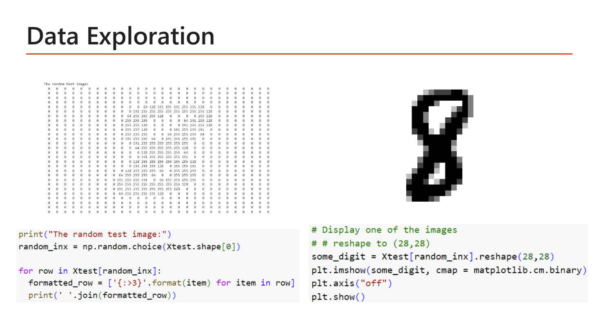
3}' and one displaying the image with plt.imshow and matplotlib.cm.binary">หน้านี้สอนนิสัยที่ดีที่สุดอย่างหนึ่งของงาน ML คือ "ดูข้อมูลดิบด้วยตาก่อนเสมอ". ตารางตัวเลขทางซ้ายคือภาพหนึ่งภาพที่สุ่มมาจาก test set พิมพ์ออกมาทีละแถว: ช่องส่วนใหญ่เป็น 0 (พื้นหลังดำ) ส่วนเส้นของตัวเลขปรากฏเป็นแถบของค่า 64, 128, 191, 255 เรียงต่อกัน และเมื่อเอาตารางเดียวกันไปวาดด้วย plt.imshow ก็ได้ภาพเลข 8 ทางขวา. สองอย่างนี้คือข้อมูลชุดเดียวกัน — บทเรียนคือ "ภาพ" ในสายตาคอมพิวเตอร์ก็คือตารางตัวเลข 784 ตัวเท่านั้น และค่าสูงสุดที่เจอคือ 255 ซึ่งเป็นตัวเลขที่เราจะใช้หารในหน้าถัดไป.
print("The random test image:")
random_inx = np.random.choice(Xtest.shape[0])
for row in Xtest[random_inx]:
formatted_row = ['{:>3}'.format(item) for item in row]
print(' '.join(formatted_row))
# Display one of the images
# # reshape to (28,28)
some_digit = Xtest[random_inx].reshape(28,28)
plt.imshow(some_digit, cmap = matplotlib.cm.binary)
plt.axis("off")
plt.show()| โค้ด | ทำอะไร |
|---|---|
| random_inx = np.random.choice(Xtest.shape[0]) | Xtest.shape[0] = 10000 (มิติแรก = จำนวนภาพ); np.random.choice(10000) สุ่มจำนวนเต็ม 1 ตัวจาก 0–9999 มาเป็นดัชนีภาพ |
| for row in Xtest[random_inx]: | Xtest[random_inx] คือภาพเดียว shape (28,28); วนลูปบนอาร์เรย์ 2 มิติจะได้ทีละแถว (28 รอบ แถวละ 28 ค่า) |
| formatted_row = ['{:>3}'.format(item) for item in row] | จัดรูปแบบแต่ละค่าให้ชิดขวาในความกว้าง 3 ตัวอักษร (> = ชิดขวา) เพื่อให้เลข 0, 64 และ 255 เรียงเป็นคอลัมน์ตรงกัน อ่านออกเป็นรูปได้ |
| print(' '.join(formatted_row)) | ต่อ 28 ค่าในแถวเป็นสตริงเดียวคั่นด้วยเว้นวรรค แล้วพิมพ์ทีละแถว |
| some_digit = Xtest[random_inx].reshape(28,28) | บังคับให้เป็นตาราง 28×28 (ถ้าภาพถูก flatten เป็น 784 ไปแล้วก็จะกลับมาเป็นตารางได้) — imshow ต้องการอาร์เรย์ 2 มิติ |
| plt.imshow(some_digit, cmap = matplotlib.cm.binary) | วาดอาร์เรย์เป็นภาพ; cmap (color map) แบบ binary แปลงค่า 0 เป็นขาวและค่าสูงเป็นดำ จึงได้ตัวเลขสีดำบนพื้นขาว |
| plt.axis("off") / plt.show() | ซ่อนแกนและขีดตัวเลขรอบภาพ แล้วสั่งแสดงผล |
พิมพ์ข้อความ The random test image: แล้วตามด้วยตาราง 28 บรรทัด เช่นบรรทัดที่มีเส้นของตัวเลขจะอ่านได้ว่า 0 0 ... 0 128 128 191 255 255 191 0 ... 0 ส่วนบรรทัดบนสุดและล่างสุดเป็น 0 ทั้งแถว; จากนั้นแสดงภาพขาวดำขนาดเล็กของตัวเลขนั้น (ในสไลด์คือเลข 8)
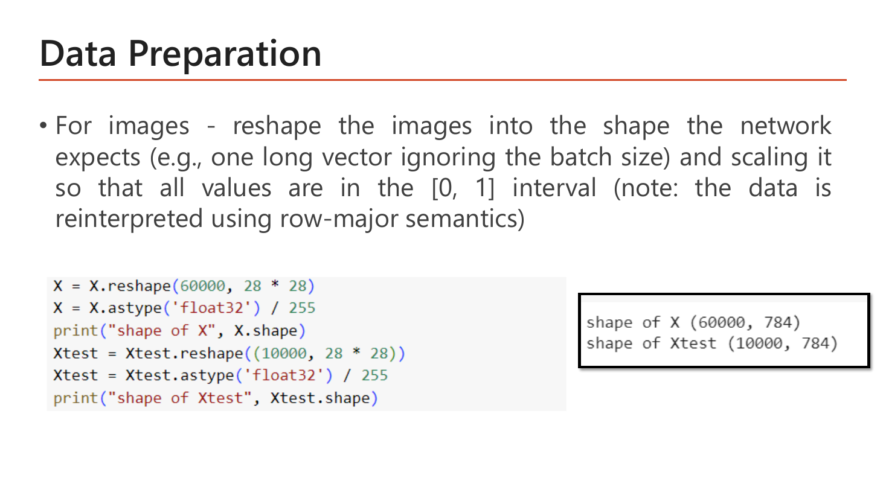
สองสิ่งที่ต้องทำกับภาพก่อนป้อนเข้า Dense: (ก) reshape ให้เป็น "one long vector ignoring the batch size" คือยืดตาราง 28×28 เป็นเวกเตอร์ยาว 784 โดยไม่ยุ่งกับมิติแรกที่เป็นจำนวนตัวอย่าง และ (ข) scale ให้ทุกค่าอยู่ในช่วง \([0,1]\). สไลด์หมายเหตุไว้ว่า "the data is reinterpreted using row-major semantics" — คือการยืดทำโดยไล่ทีละแถว (แถวที่ 1 ทั้ง 28 ค่า ต่อด้วยแถวที่ 2 ...) ซึ่งเป็นระเบียบมาตรฐานของ numpy; ขอแค่ทุกภาพยืดด้วยระเบียบเดียวกัน เครือข่ายก็เรียนได้ เพราะพิกเซลตำแหน่งเดิมจะไปอยู่ตำแหน่งเดิมในเวกเตอร์เสมอ.
X = X.reshape(60000, 28 * 28)
X = X.astype('float32') / 255
print("shape of X", X.shape)
Xtest = Xtest.reshape((10000, 28 * 28))
Xtest = Xtest.astype('float32') / 255
print("shape of Xtest", Xtest.shape)| โค้ด | ทำอะไร |
|---|---|
| X.reshape(60000, 28 * 28) | เปลี่ยนมิติจาก (60000,28,28) เป็น (60000,784) โดยจำนวนค่าทั้งหมดต้องเท่าเดิม (\(60000\times784\) = \(60000\times28\times28\)); เขียน 28*28 แทน 784 เพื่อให้อ่านออกว่ามาจากไหน |
| X.astype('float32') | แปลงชนิดข้อมูลจากจำนวนเต็ม uint8 (0–255) เป็นทศนิยม 32 บิต — จำเป็นเพราะถ้าหารแบบจำนวนเต็มจะได้ 0 หมด และ float32 ใช้หน่วยความจำครึ่งเดียวของ float64 โดยความแม่นยำเพียงพอสำหรับ deep learning |
| / 255 | min-max scaling ที่ min = 0 และ max = 255 (Lesson 1 §4): \(255/255=1\), \(128/255=0.502\), \(64/255=0.251\), \(0/255=0\) — ทุกค่าจึงอยู่ใน \([0,1]\) ทำให้ \(z\) ไม่ใหญ่เกินตั้งแต่ layer แรก |
| Xtest.reshape((10000, 28 * 28)) | ทำแบบเดียวกันกับชุดทดสอบ (สังเกตว่าบรรทัดนี้ส่ง shape เป็น tuple ในวงเล็บ ส่วนบรรทัดของ X ส่งเป็นสองอาร์กิวเมนต์ — reshape รับได้ทั้งสองแบบ ผลเหมือนกัน); สำคัญ: ต้องแปลงชุด test ด้วยวิธีเดียวกันเป๊ะ ไม่เช่นนั้นโมเดลจะเห็นข้อมูลคนละสเกล |
shape of X (60000, 784)shape of Xtest (10000, 784)
![Slide Preparing the Labels: in multi-class classification it is generally good practice to transform the target attribute into one hot encoding which aligns with the network's output probabilities for each class; code calls keras.utils.to_categorical on y and ytest and prints y[:10]; the integer labels [5 0 4 1 9 2 1 3 1 4] become a 10 by 10 matrix of zeros with a single 1 in each row; the last bullet says many times we use integer labels directly without one-hot encoding since it is convenient, saves memory space and gives better performance especially with mutually exclusive integer labels](../assets/slides/dl5-p27-preparing-labels-onehot.png)
สไลด์ให้ทั้งสองทางเลือกพร้อมเหตุผล. ทางแรก: ใน multi-class classification "it is generally a good practice" ที่จะแปลง target เป็น one-hot encoding เพราะมันสอดคล้องกับ output ของเครือข่ายที่เป็นความน่าจะเป็นของแต่ละคลาส (output มี 10 ค่า ⇒ ป้ายก็ควรมี 10 ค่า จะได้เทียบกันตรงๆ ได้). ตัวอย่างบนสไลด์ชัดมาก: ป้าย 10 ตัวแรก [5 0 4 1 9 2 1 3 1 4] ถูกแปลงเป็นเมทริกซ์ 10×10 ที่แถวแรกเป็น [0. 0. 0. 0. 0. 1. 0. 0. 0. 0.] (เลข 1 อยู่ตำแหน่งที่ 5 นับจาก 0 ⇒ แทนป้าย "5") แถวที่สองเป็น [1. 0. ...] (ป้าย "0") และแถวที่สามมี 1 ที่ตำแหน่งที่ 4 (ป้าย "4"). ทางที่สอง ซึ่งเป็นทางที่อาจารย์ใช้จริงในโน้ตบุ๊ก: "many times we use integer labels directly" เพราะสะดวก ประหยัดหน่วยความจำ และให้ประสิทธิภาพดีกว่าเมื่อป้ายเป็นจำนวนเต็มที่คลาสไม่ทับซ้อนกัน (mutually exclusive).
# using keras package calling to_categorical() function
# print(y[:10]) # [5 0 4 1 9 2 1 3 1 4]
y = keras.utils.to_categorical(y)
ytest = keras.utils.to_categorical(ytest)
print(y[:10])| โค้ด | ทำอะไร |
|---|---|
| # print(y[:10]) # [5 0 4 1 9 2 1 3 1 4] | คอมเมนต์ที่บอกหน้าตาของป้ายก่อนแปลง: เป็นจำนวนเต็มตัวเดียวต่อภาพ shape (60000,) |
| y = keras.utils.to_categorical(y) | แปลงเป็น one-hot: shape เปลี่ยนจาก (60000,) เป็น (60000, 10); ฟังก์ชันเดาจำนวนคลาสจากค่าสูงสุด (9) ⇒ ได้ 10 คอลัมน์ (ระบุเองได้ด้วย num_classes=10) |
| ytest = keras.utils.to_categorical(ytest) | ต้องแปลงชุด test ด้วย มิฉะนั้น evaluate จะเทียบป้ายคนละรูปแบบกับ output แล้วพัง |
| print(y[:10]) | พิมพ์ 10 แถวแรกหลังแปลง เพื่อยืนยันว่าแต่ละแถวมีเลข 1 เพียงตัวเดียว |
| (ทางเลือกที่อาจารย์ใช้จริง) | ข้ามสองบรรทัด to_categorical ไปเลย แล้วไปตั้ง loss='sparse_categorical_crossentropy' ตอน compile แทน — ผลลัพธ์ loss เท่ากันเป๊ะ (พิสูจน์ด้วยตัวเลขในหัวข้อ 6) |
ก่อนแปลง: [5 0 4 1 9 2 1 3 1 4] · หลังแปลงเป็นเมทริกซ์ 10 แถว เช่น
[[0. 0. 0. 0. 0. 1. 0. 0. 0. 0.]
[1. 0. 0. 0. 0. 0. 0. 0. 0. 0.]
[0. 0. 0. 0. 1. 0. 0. 0. 0. 0.]
[0. 1. 0. 0. 0. 0. 0. 0. 0. 0.]
[0. 0. 0. 0. 0. 0. 0. 0. 0. 1.]] ...
ตรวจง่ายๆ ว่าถูก: แถวที่ 5 (ป้ายจริง = 9) ต้องมี 1 อยู่ตำแหน่งสุดท้าย ✓
mnist.load_data() คือ (X, y), (Xtest, ytest) — กับดัก: เขียนเป็น X, y, Xtest, ytest = mnist.load_data() ซึ่งรันไม่ผ่านX.reshape(60000, 28*28) แล้ว / 255 — กับดัก: หารด้วย 256, หรือ reshape เป็น (784, 60000) (สลับมิติ), หรือลืม astype('float32') ก่อนหารkeras.utils.to_categorical(y) เปลี่ยน shape (60000,) → (60000,10); ถ้าใช้ one-hot ต้องคู่กับ categorical_crossentropy ถ้าใช้ integer ต้องคู่กับ sparse_categorical_crossentropyX.shape หลังเตรียมข้อมูลคืออะไร — ตอบ (60000, 784) ไม่ใช่ (60000, 28, 28)![Slide Build the Model with Sequential API: Alternative 1 builds the model through its constructor by passing a list of layers, Alternative 2 creates the instance and calls .add to append layers; the code shows both forms with Dense(16, relu, input_shape=(28*28,)), Dense(16, relu) and Dense(10, softmax); notes explain that a Dense layer contains a given number of units densely connected to the previous layer and is essential for learning complex patterns, that specifying input_shape is optional since layers adjust automatically during fit but is advised so model.summary shows the weights, and that training example or batch size is not required since any number of images can be passed into the Input layer](../assets/slides/dl5-p28-build-model-sequential-api.png)
โครงสร้างที่จะใช้กับ MNIST คือ 784 → 16 → 16 → 10 และอาจารย์ให้เขียนได้สองแบบซึ่งให้โมเดลเหมือนกันทุกประการ. Alternative 1: สร้างผ่าน constructor โดยส่ง list ของ layer เข้าไปตอนสร้างเลย. Alternative 2: สร้างอินสแตนซ์เปล่าก่อนแล้วเรียก .add ต่อทีละชั้น (แบบที่เราใช้มาตลอดในหน้า 13–14, 17, 22). เลือกแบบไหนก็ได้ตามความถนัด แต่ข้อสอบอาจให้ดูโค้ดแบบหนึ่งแล้วถามว่าเทียบเท่ากับแบบไหน.
# input_shape=(28 * 28,) - the input of each training data example
# alternative 1
model = models.Sequential([Dense(16, activation='relu', input_shape=(28 * 28,)),
Dense(16, activation='relu'),
Dense(10, activation='softmax')])
# alternative 2
model = models.Sequential()
model.add(Dense(16, activation='relu', input_shape=(28*28,)))
model.add(Dense(16, activation='relu'))
model.add(Dense(10, activation='softmax'))| โค้ด | ทำอะไร |
|---|---|
| models.Sequential([ ... ]) | Alternative 1: ส่ง list ของ layer เรียงตามลำดับที่ข้อมูลจะไหลผ่าน — สังเกตวงเล็บเหลี่ยมและจุลภาคคั่นระหว่าง layer |
| Dense(16, activation='relu', input_shape=(28 * 28,)) | hidden layer แรก 16 node; input_shape=(784,) คือ shape ของหนึ่งตัวอย่างหลัง flatten แล้ว — จุลภาคท้ายบอกว่าเป็น tuple มิติเดียว |
| Dense(16, activation='relu') | hidden layer ที่สอง — Keras รู้เองว่า input มี 16 ค่าจาก layer ก่อนหน้า |
| Dense(10, activation='softmax') | output layer: 10 node เท่ากับจำนวนคลาส และ softmax เพื่อแปลงคะแนนดิบ 10 ค่าเป็นความน่าจะเป็นที่รวมกันได้ 1 (สูตร \(\hat y_k = e^{z_k}/\sum_j e^{z_j}\) จาก Lesson 3 §6) |
| model = models.Sequential() model.add(...) | Alternative 2: ผลลัพธ์เหมือน Alternative 1 ทุกประการ ต่างแค่รูปแบบการเขียน; ข้อดีคือแทรก/คอมเมนต์ layer ทีละบรรทัดได้ง่าย |
สามบันทึกใต้โค้ดบนสไลด์เป็นเนื้อหาที่ออกสอบเป็นข้อความได้ตรงๆ. หนึ่ง: Dense layer "contains a given number of units that are densely connected to the previous layer" คือ node ทุกตัวเชื่อมกับ node ทุกตัวของชั้นก่อนหน้า (จึงมีพารามิเตอร์ \(s_l\times(s_{l-1}+1)\)) และ layer นี้ "essential for learning complex patterns in the data through adjusting its parameters during training". สอง: การระบุ input_shape เป็นทางเลือก เพราะตอน fit() ข้อมูลจะถูกป้อนเข้ามาและ layer ปรับตัวเอง แต่อาจารย์แนะนำให้ระบุไว้ เพราะถ้าไม่ระบุ เรียก model.summary() ก่อนเทรนจะยังไม่เห็นจำนวน weight ของแต่ละชั้น. สาม: ไม่ต้องบอกจำนวนตัวอย่างหรือ batch size ใน input_shape เพราะ "we can pass any number of images into Input layer" — นี่คือเหตุผลที่ output shape ใน summary ขึ้นต้นด้วย None เสมอ.

สไลด์อธิบายกฎการนับไว้เป็นประโยคว่า จำนวนพารามิเตอร์ของชั้นหนึ่งได้จาก "multiplying the number of neurons in that layer by the number of neurons in the previous layer (representing the weights connecting them) adding one (representing the associated biases)" — คือ \(s_l\times(s_{l-1}+1)\) ซึ่งเป็นสูตรเดียวกับที่เราได้มาใน Lesson 3 §4. บนสไลด์มีลูกศรกำกับที่มาของทั้งสามตัวเลขไว้ให้ครบ ลองคำนวณเองแล้วเทียบ.
dense ต่อจาก input 784 ค่า ไปยัง 16 nodeทำไมต้อง +1: แต่ละ node มี bias หนึ่งตัวของตัวเอง (node ละ 784 weight + 1 bias)
dense_1 จาก 16 ไป 16dense_2 จาก 16 ไป 10ตรงกับ Total params: 13,002 และ Trainable params: 13,002 บนสไลด์ทุกหลัก ส่วน Non-trainable params: 0 เพราะโมเดลนี้ไม่มี BatchNormalization (ถ้ามี จะมี moving mean/variance เป็น non-trainable อย่างที่คำนวณไว้ในหัวข้อ 3.2). ข้อผิดพลาดที่พบบ่อยที่สุด: ลืมบวก 1 แล้วได้ \(16\times784=12{,}544\) — ต่างจากคำตอบจริง 16 พอดี (= จำนวน bias)
อีกอย่างที่ควรสังเกตจากตัวเลขชุดนี้: ชั้นแรกกินพารามิเตอร์ถึง 96.6% ของทั้งโมเดล (\(12{,}560/13{,}002\)) เพราะมันต่อกับ input 784 ตัว. ถ้าจะลดขนาดโมเดล การลดความกว้างของชั้นแรกได้ผลมากกว่าการตัดชั้นหลังออกเสมอ.
![Slide Compile the model: before training, config three things as part of the compilation step, namely a loss function (cost or objective function) which is the quantity to be minimized during training, an optimizer which determines how the network will be updated based on the loss function, and metrics which are the measures of success monitored during training and testing, here only accuracy, with a note that since the metric is not intended to be optimized during training it does not need to be differentiable; the code calls model.compile with optimizer='adam', loss='categorical_crossentropy' with sparse_categorical_crossentropy commented as an alternative, and metrics=['accuracy']](../assets/slides/dl5-p30-compile-the-model.png)
ขั้น compile ตั้งค่า 3 อย่างตามที่สไลด์ระบุ. หนึ่ง loss function (เรียกได้อีกว่า cost function หรือ objective function) = "the quantity to be minimized during training" คือปริมาณที่จะถูกทำให้น้อยที่สุด. สอง optimizer = "determine how the network will be updated based on the loss function" คือวิธีที่ weight จะถูกอัปเดตจาก gradient (Adam, SGD, RMSProp จาก Lesson 4 §5). สาม metrics = "the measures of success to be monitored during training and testing" — ที่นี่สนใจแค่ accuracy. อาจารย์หมายเหตุประเด็นที่ลึกและออกสอบได้: เพราะ metric ไม่ได้ถูก optimize ระหว่างเทรน มันจึง "doesn't need to be differentiable" — ต่างจาก loss ที่ต้องหาอนุพันธ์ได้เพราะ backprop ต้องใช้. accuracy เป็นตัวอย่างที่ดี: มันคือการนับว่าทายถูกกี่ตัว ซึ่งเป็นฟังก์ชันขั้นบันได หาอนุพันธ์แล้วได้ 0 ทุกจุด จึงใช้เป็น loss ไม่ได้ แต่ใช้เป็น metric ได้สบาย.
# compile the model
model.compile(optimizer='adam',
loss='categorical_crossentropy', #loss='sparse_categorical_crossentropy',
metrics=['accuracy'])| โค้ด | ทำอะไร |
|---|---|
| optimizer='adam' | ใช้ Adam ด้วยค่า default (learning_rate=0.001, beta_1=0.9, beta_2=0.999); ส่งเป็นสตริงได้เมื่อไม่ต้องการแก้ไฮเปอร์พารามิเตอร์ — ถ้าต้องการแก้ให้ส่งเป็นออบเจ็กต์แบบหน้า 34 |
| loss='categorical_crossentropy' | ใช้เมื่อ label ถูกแปลงเป็น one-hot แล้ว (ตามหน้า 27 ทางเลือกแรก) — สูตร \(-\sum_k y_k\ln\hat y_k\) |
| #loss='sparse_categorical_crossentropy' | บรรทัดทางเลือกที่ถูกคอมเมนต์ไว้: ใช้เมื่อ label ยังเป็น จำนวนเต็ม 0–9 — ต้องเลือกให้ตรงกับรูปแบบ label ที่เตรียมไว้ มิฉะนั้นจะเกิด shape mismatch error |
| metrics=['accuracy'] | เฝ้าดูความแม่นยำ; ใส่ได้หลายตัวเช่น ['accuracy','AUC']; ชื่อคีย์ที่จะไปโผล่ใน history คือ accuracy และ val_accuracy |
compile() ไม่คืนค่าและไม่พิมพ์อะไร — มันแค่ผูก loss/optimizer/metric เข้ากับโมเดล. สัญญาณว่าทำถูกคือหลังจากนี้เรียก fit() แล้วไม่ error; ถ้าเลือก loss ไม่ตรงกับรูปแบบ label จะได้ข้อความประเภท "Shapes (32, 1) and (32, 10) are incompatible" ตอนเริ่มเทรน
![Keras training call history = model.fit(X, y, epochs=40, validation_split=0.2 batch_size=64) with a worked calculation that the number of mini-batches equals number of training examples divided by batch size = 48,000/64 = 750 batches, matching the 750/750 progress bar in the epoch logs which show Epoch 1/40 with accuracy 0.3378 loss 2.0053 val_accuracy 0.7753 val_loss 0.8860 improving by Epoch 5/40 to accuracy 0.8961 loss 0.3759 val_accuracy 0.9076 val_loss 0.3250; a note says the fit method returns a history object and history.history.keys() gives loss, accuracy, val_loss, val_accuracy](../assets/slides/dl5-p31-launch-training-minibatch-count.png)
หน้านี้คือหน้าที่คำนวณออกสอบชัวร์ที่สุดของครึ่งหลัง เพราะอาจารย์เขียนสูตรไว้เต็มๆ บนสไลด์: จำนวน mini-batch = จำนวน training example หารด้วย batch size = \(48{,}000/64 = 750\) batches และเทียบให้ดูกับตัวเลข 750/750 ที่ปรากฏในแถบความคืบหน้าของ log จริงเพื่อยืนยันว่าตรงกัน. คำถามที่ต้องตอบให้ได้คือ "ทำไมเป็น 48,000 ทั้งที่ MNIST มี 60,000?"
# train the model
history = model.fit(X, y, epochs=40, validation_split=0.2, batch_size=64)| โค้ด | ทำอะไร |
|---|---|
| history = model.fit(...) | เริ่มเทรนจริง และเก็บค่าที่คืนกลับไว้ในตัวแปร history; สไลด์หมายเหตุว่า ".fit method return history object containing the specified training (also validation metrics) from the metrics parameter passed to the compile method" — คือมีเฉพาะ metric ที่เราสั่งไว้ตอน compile เท่านั้น |
| X, y | อาร์กิวเมนต์สองตัวแรกคือข้อมูลและป้าย ส่งตามตำแหน่ง (positional) ไม่ต้องใส่ชื่อ |
| epochs=40 | วนข้อมูลทั้งชุด 40 รอบ; หนึ่ง epoch = เห็นทุกตัวอย่างครบหนึ่งครั้ง |
| validation_split=0.2 | ให้ Keras ตัด 20% ท้ายของข้อมูลเทรน ออกไปเป็น validation set ให้อัตโนมัติ — ต่างจาก validation_data=(Xval,yval) ในหน้า 22 ที่เราเตรียมชุดแยกมาเอง; ใช้พร้อมกันทั้งสองตัวไม่ได้ |
| batch_size=64 | อัปเดต \(\theta\) หนึ่งครั้งต่อ 64 ตัวอย่าง (mini-batch gradient descent จาก Lesson 4 §3); ถ้าไม่ระบุ ค่า default ของ Keras คือ 32 |
บรรทัดบนสไลด์เขียนว่า model.fit(X, y, epochs=40, validation_split=0.2 batch_size=64) — ขาดจุลภาคระหว่าง 0.2 กับ batch_size ซึ่งถ้าพิมพ์ตามจะได้ SyntaxError ทันที. โค้ดที่ถูกต้องคือใส่จุลภาคอย่างในกล่องด้านบน (โน้ตบุ๊กของอาจารย์ก็เขียนแบบมีจุลภาค). ถ้าข้อสอบให้แก้โค้ดที่ผิด จุดนี้คือคำตอบ
validation_split=0.2; batch_size=64; epochs=40validation set ไม่ถูกใช้คำนวณ gradient จึงไม่นับรวมในจำนวน batch ที่อัปเดต
ตรงกับแถบ 750/750 ใน log ของสไลด์ ✓ (ถ้าหารไม่ลงตัวให้ปัดขึ้น เพราะก้อนสุดท้ายที่ไม่เต็มก็ยังถูกใช้)
นี่คือเหตุผลที่ mini-batch เรียนเร็วกว่ามากต่อหนึ่ง epoch
คำตอบ: 750 batch ต่อ epoch และอัปเดต \(\theta\) รวม 30,000 ครั้ง. ตัวอย่างการปัดขึ้น: ถ้า batch_size = 128 จะได้ \(48{,}000/128 = 375\) พอดี แต่ถ้า batch_size = 32 กับ test set 10,000 ตัวอย่าง จะได้ \(\lceil 10{,}000/32\rceil = 313\) batch — ซึ่งตรงกับเลข 313/313 ที่เห็นตอน evaluate ในหน้า 33
Epoch 1/40 — 750/750 — 26s 34ms/step - accuracy: 0.3378 - loss: 2.0053 - val_accuracy: 0.7753 - val_loss: 0.8860
Epoch 3/40 — 750/750 — 27s 35ms/step - accuracy: 0.8608 - loss: 0.5015 - val_accuracy: 0.8838 - val_loss: 0.4069
Epoch 5/40 — 750/750 — 28s 37ms/step - accuracy: 0.8961 - loss: 0.3759 - val_accuracy: 0.9076 - val_loss: 0.3250
และ history.history.keys() คืน dict_keys(['loss', 'accuracy', 'val_loss', 'val_accuracy']) — สี่คีย์นี้มาจาก metrics=['accuracy'] ที่ตั้งไว้ตอน compile บวกกับ loss และคู่ val_ ของทั้งสอง
![Slide Plot the Performance of the Model: matplotlib code building an epochs range from the length of history.history['loss'] and plotting loss and accuracy with val_loss and val_accuracy commented out; two result charts are shown, one trained for 5 epochs where loss falls from about 1.55 to 0.37 and accuracy climbs from about 0.53 to 0.90 with the two validation curves still close to the training ones, and one trained for 40 epochs where training loss keeps falling to about 0.1 while val_loss flattens and rises slightly around 0.2, with a link to the TensorFlow overfit and underfit tutorial](../assets/slides/dl5-p32-plot-performance-epochs.png)
หลังเทรนเสร็จ ข้อมูลทุก epoch อยู่ใน history.history ซึ่งเป็น dictionary ธรรมดา เราจึงพล็อตเองได้ด้วย matplotlib. ประเด็นที่อาจารย์อยากให้เห็นอยู่ที่กราฟสองรูปทางขวา: รูป 5 epochs เส้น loss ดิ่งจากราว 1.55 ลงมา 0.37 และ accuracy ไต่จากราว 0.53 ขึ้นไป 0.90 โดยเส้นของ validation ยังเกาะติดกับเส้นของ training — สถานการณ์ปกติดี. ส่วนรูป 40 epochs เส้น loss ของ training ยังลดต่อไปเรื่อยๆ จนเหลือราว 0.1 แต่ val_loss หยุดลดแถว 0.2 แล้วเริ่มกระดกขึ้นและแกว่ง — นี่คือหน้าตาของ overfitting: โมเดลเริ่มจำข้อมูลเทรนแทนที่จะเรียนรูปแบบทั่วไป (ลิงก์ที่สไลด์ให้ไว้คือบทเรียน overfit and underfit ของ TensorFlow). จุดที่ควรหยุดเทรนคือจุดที่ val_loss ต่ำสุด — ในการรันจริงของโน้ตบุ๊กอาจารย์คือ epoch ที่ 13 ด้วย val_loss 0.1642 ซึ่งเป็นแนวคิดที่ Lesson 6 จะทำให้อัตโนมัติด้วย EarlyStopping.
#plotthelossandaccuracy (คอมเมนต์ "plot the loss and accuracy")
epochs = range(1, len(history.history['loss']) + 1)
plt.plot(epochs, history.history['loss'], label = 'loss')
#plt.plot(epochs, history.history['val_loss'], label = 'val_loss')
plt.plot(epochs, history.history['accuracy'], label = 'acc')
#plt.plot(epochs, history.history['val_accuracy'], label = 'val_acc')
plt.title('Loss, Accuracy vs Epochs')
plt.xlabel("Epochs")
plt.ylabel("Accuracy")
plt.legend()
plt.show()| โค้ด | ทำอะไร |
|---|---|
| epochs = range(1, len(history.history['loss']) + 1) | สร้างแกน x เป็น 1, 2, …, N โดย N = จำนวน epoch ที่เทรนจริง; ใช้ len() แทนการเขียนเลข 40 ตายตัว เพื่อให้โค้ดใช้ได้แม้หยุดเทรนกลางคัน; ต้อง +1 เพราะ range ไม่รวมค่าสุดท้าย |
| history.history['loss'] | ลิสต์ของค่า loss หนึ่งค่าต่อหนึ่ง epoch (ความยาวเท่ากับจำนวน epoch) — คีย์ที่ใช้ได้คือ loss, accuracy, val_loss, val_accuracy ตามที่ keys() บอกในหน้า 31 |
| plt.plot(epochs, ..., label = 'loss') | วาดเส้น; label คือชื่อที่จะไปโผล่ใน legend |
| #plt.plot(epochs, history.history['val_loss'], ...) | สองบรรทัดของ val_ ถูกคอมเมนต์ไว้ในสไลด์ — ถ้าเปิดใช้จะได้กราฟสี่เส้นเหมือนสองรูปตัวอย่างทางขวา ซึ่งจำเป็นถ้าต้องการดู overfitting |
| plt.title / plt.xlabel / plt.ylabel | ตั้งหัวเรื่องและชื่อแกน (สังเกตว่าแกน y ถูกตั้งชื่อว่า "Accuracy" ทั้งที่มีเส้น loss ปนอยู่ด้วย — เป็นชื่อที่ไม่ตรงนัก แต่ไม่กระทบการวาด) |
| plt.legend() / plt.show() | legend() แสดงกล่องคำอธิบายสีเส้นโดยอ่านจาก label; show() สั่งแสดงผลจริง ถ้าลืมบรรทัดนี้ในสคริปต์ธรรมดาจะไม่มีอะไรปรากฏ |
ได้กราฟหนึ่งรูปชื่อ Loss, Accuracy vs Epochs ที่มีสองเส้น: loss ลดลงต่อเนื่องและ acc เพิ่มขึ้นต่อเนื่อง. ถ้าเปิดสองบรรทัดที่คอมเมนต์ไว้ จะได้สี่เส้นเหมือนกราฟตัวอย่างบนสไลด์ — และจะเห็นว่า val_loss ของการเทรน 40 epoch แยกตัวขึ้นจาก loss ตั้งแต่ราว epoch ที่ 10 เป็นต้นไป
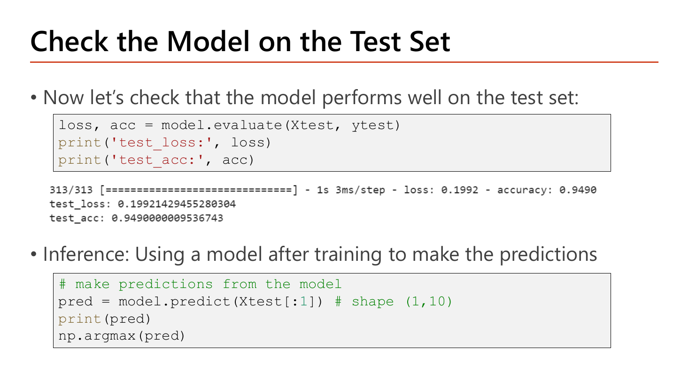
ขั้นสุดท้ายมีสองเรื่องที่ต้องแยกให้ออก. evaluate ใช้เมื่อเรามีเฉลย และอยากรู้ว่าโมเดลทำได้ดีแค่ไหน; predict คือสิ่งที่สไลด์เรียกว่า Inference — "using a model after training to make the predictions" คือใช้โมเดลกับข้อมูลใหม่ที่ไม่มีเฉลย.
loss, acc = model.evaluate(Xtest, ytest)
print('test_loss:', loss)
print('test_acc:', acc)
# make predictions from the model
pred = model.predict(Xtest[:1]) # shape (1,10)
print(pred)
np.argmax(pred)| โค้ด | ทำอะไร |
|---|---|
| loss, acc = model.evaluate(Xtest, ytest) | รัน forward pass บนชุดทดสอบทั้ง 10,000 ภาพแล้วคืน [loss, metric] ตามลำดับที่ตั้งไว้ตอน compile — ไม่มีการอัปเดต weight ใดๆ; แถบความคืบหน้าแสดง 313/313 เพราะ \(\lceil 10{,}000/32\rceil=313\) (batch_size ของ evaluate ค่า default = 32) |
| print('test_loss:', loss) | พิมพ์ค่า loss บนชุดทดสอบ — ตัวเลขที่ควรรายงาน ไม่ใช่ loss ของชุดเทรน |
| pred = model.predict(Xtest[:1]) | Xtest[:1] คือการ slice เอาภาพแรกโดยยังคงมิติ batch ไว้ ⇒ shape (1,784); ถ้าเขียน Xtest[0] จะได้ shape (784,) ซึ่ง predict ไม่รับ. ผลลัพธ์มี shape (1,10) ตามคอมเมนต์บนสไลด์ = 1 ตัวอย่าง × 10 คลาส |
| print(pred) | แสดงเวกเตอร์ความน่าจะเป็น 10 ค่าที่ออกจาก softmax ซึ่งรวมกันได้ 1 เสมอ |
| np.argmax(pred) | คืนดัชนีของค่าที่มากที่สุด ซึ่งในงานนี้ดัชนีตรงกับชื่อคลาสพอดี (ดัชนี 7 = เลข 7); ถ้าทำนายหลายภาพพร้อมกันต้องระบุแกนเป็น np.argmax(pred, axis=1) มิฉะนั้นจะได้ดัชนีเดียวของทั้งเมทริกซ์ |
313/313 ━━━━ 1s 3ms/step - loss: 0.1992 - accuracy: 0.9490
test_loss: 0.19921429455280304
test_acc: 0.9490000009536743
ส่วนผลของ predict บนภาพทดสอบภาพแรก (เฉลยคือเลข 7) ได้
[[4.31e-07 7.02e-10 1.07e-05 2.46e-04 9.09e-08 2.91e-06 5.42e-11 9.9962544e-01 2.81e-06 1.12e-04]]
np.argmax(pred) → 7 — ค่าที่ตำแหน่ง 7 คือ 0.99963 (มั่นใจ 99.96%) ส่วนคลาสอื่นรวมกันได้แค่ 0.00037 และผลรวมทั้ง 10 ค่าเท่ากับ 1 พอดีตามคุณสมบัติของ softmax
batch_size จาก 64 เป็น 128: batch ต่อ epoch ลดจาก 750 เหลือ 375 ⇒ อัปเดตน้อยลงครึ่งหนึ่ง ต้องเพิ่ม epoch หรือ learning rate ชดเชย.history ที่ได้จาก fit คือวัตถุดิบของ callback ทั้งหมดใน Lesson 6.fit มาก่อน compilemetrics ไม่ต้อง differentiable เพราะไม่ได้ถูก optimize ต่างจาก loss. กับดัก: บอกว่า metric ต้องหาอนุพันธ์ได้เหมือน lossหัวข้อ 5 ใช้ optimizer='adam' กับ loss=... โดยยังไม่ได้อธิบายว่าจะเลือกอย่างไรให้ถูกกับปัญหา. สไลด์หน้า 34 ให้ตารางที่ตอบคำถามนี้ทั้งตาราง และเป็นตารางที่ควรจำให้ได้ทั้งหมดเพราะออกสอบได้ทุกแถว.
![Slide More Compile Options: an Adam optimizer configured as a python object with learning_rate 0.001, beta_1 0.9 and beta_2 0.999; a table of common last-layer activation and loss per problem type listing binary classification with sigmoid and binary_crossentropy, multiclass single-label with softmax and categorical_crossentropy, multiclass multilabel with sigmoid and binary_crossentropy, regression to arbitrary values with None and mse, regression to values between 0 and 1 with sigmoid and mse or binary_crossentropy; a second table compares categorical_crossentropy whose true label is a one-hot vector against sparse_categorical_crossentropy whose true label is an integer index, with identical final loss values and different memory efficiency](../assets/slides/dl5-p34-compile-options-loss-table.png)
อย่างแรกที่สไลด์แสดงคือการตั้ง optimizer ผ่านออบเจ็กต์ของ Python เพื่อปรับไฮเปอร์พารามิเตอร์เองได้ ("Try config with other optimizer via python objects").
optimizer_fn = keras.optimizers.Adam(learning_rate=0.001, beta_1=0.9, beta_2=0.999)| โค้ด | ทำอะไร |
|---|---|
| keras.optimizers.Adam(...) | สร้างออบเจ็กต์ optimizer เก็บไว้ในตัวแปร แล้วค่อยส่งให้ model.compile(optimizer=optimizer_fn, ...) — ต่างจากการส่งสตริง 'adam' ตรงที่ตอนนี้เราคุมค่าได้เอง |
| learning_rate=0.001 | ขนาดก้าวของ gradient descent (ค่า default ของ Adam); ค่านี้คือ \(\alpha\) ใน \(\theta := \theta - \alpha\,\partial J/\partial\theta\) |
| beta_1=0.9 | สัมประสิทธิ์ EWA ของ momentum (โมเมนต์ที่หนึ่ง คือค่าเฉลี่ยของ gradient) — Lesson 4 §5 |
| beta_2=0.999 | สัมประสิทธิ์ EWA ของ RMSProp (โมเมนต์ที่สอง คือค่าเฉลี่ยของ gradient ยกกำลังสอง); ทั้งสองค่านี้คือค่า default ที่แทบไม่ต้องแก้ |
ต่อมาคือ "Common Last-layer Activation and a Loss Function" ซึ่งเป็นตารางจับคู่ที่ต้องตรงกันเสมอ เพราะ activation กำหนดรูปแบบของ output ส่วน loss กำหนดวิธีวัดความผิด ถ้าสองอย่างนี้ไม่เข้าคู่กันโมเดลจะเรียนผิดทางหรือ error ทันที:
| ชนิดปัญหา (Problem type) | Last-layer activation | Loss function | ทำไมจึงเป็นคู่นี้ |
|---|---|---|---|
| Binary classification | sigmoid | binary_crossentropy | output 1 ค่าในช่วง 0–1 = ความน่าจะเป็นของคลาสบวก |
| Multiclass, single-label classification | softmax | categorical_crossentropy | คลาสไม่ทับซ้อน ⇒ ความน่าจะเป็นต้องรวมเป็น 1 (MNIST อยู่แถวนี้) |
| Multiclass, multilabel classification | sigmoid | binary_crossentropy | หนึ่งภาพอาจเป็นหลายคลาสพร้อมกัน ⇒ แต่ละ node ตัดสินอิสระ ไม่รวมเป็น 1 |
| Regression to arbitrary values | None (ไม่ใส่ activation) | mse | ต้องให้ output ออกค่าได้ทุกช่วง จึงห้ามบีบด้วย sigmoid |
| Regression to values between 0 and 1 | sigmoid | mse หรือ binary_crossentropy | ค่าเป้าหมายถูกจำกัดในช่วง 0–1 อยู่แล้ว จึงบีบด้วย sigmoid ได้ |
สังเกตว่าแถวที่ 2 กับ 3 ใช้คำว่า multiclass เหมือนกันแต่ได้คำตอบคนละอย่าง — ตัวตัดสินคือคำว่า single-label กับ multilabel. ตัวอย่างให้เห็นภาพ: คำถาม "รูปนี้เป็นเลขอะไร" ตอบได้คำตอบเดียว ⇒ softmax; คำถาม "รูปนี้ปรากฏวัตถุอะไรบ้าง" ตอบได้หลายอย่างพร้อมกัน ⇒ sigmoid หลายตัวที่ตัดสินอิสระ. นี่คือกับดักที่ข้อสอบชอบใช้มากที่สุดของตารางนี้.
ส่วนตารางขวามือเทียบ categorical_crossentropy กับ sparse_categorical_crossentropy ทีละแถว: True Label Format — one-hot vector (เช่น [0, 1, 0]) เทียบกับ integer index (เช่น 1); Math Formula — \(-\sum_i y_i\log(\hat y_i)\) เทียบกับ \(-\log(\hat y_{\text{correct\_index}})\); Final Loss Value — Identical ทั้งสองฝั่ง; Memory Efficiency — categorical ต่ำกว่า (เก็บเมทริกซ์ใหญ่ที่เต็มไปด้วยศูนย์) ส่วน sparse สูงกว่า (เก็บจำนวนเต็มตัวเดียว). และหมายเหตุใต้ตาราง: ให้ใช้ sparse_categorical_crossentropy เมื่อมี sparse labels (สำหรับ MNIST คือป้ายเป็นจำนวนเต็มหนึ่งตัวจาก 0 ถึง 9) และคลาสเป็น exclusive คือไม่ทับซ้อนกัน.
ทุกเทอมที่ \(y_k=0\) หายไปหมด เหลือเทอมเดียวที่ \(y_k=1\)
สูตรหยิบเฉพาะความน่าจะเป็นของ index ที่ถูกต้องมาใช้ตรงๆ
ค่า loss เท่ากันทุกหลัก (ตรงกับแถว "Final Loss Value: Identical" บนสไลด์) เพราะ one-hot ทำหน้าที่แค่ "เลือก" เทอมเดียวจากผลรวม ซึ่ง sparse ทำได้ด้วยการอ้าง index โดยตรง. ต่างกันแค่หน่วยความจำ \(K\) เท่า (ที่นี่ \(K=10\)) — ยิ่งจำนวนคลาสมาก (เช่นงานภาษาที่มี 50,000 คำ) ยิ่งต่างมหาศาล
![Slide Using Input(), Flatten() and Softmax(): the Input layer serves as the network's starting point where we provide the expected shape of each data element as a tuple; the Flatten layer transforms the input into a vector since the succeeding Dense layer needs flat input rather than a multidimensional array; the Softmax layer returns an array of 10 probability scores summing to 1; two code blocks show a Sequential model with Flatten(input_shape=(28,28)), two Dense(16, relu), Dense(10) and Softmax(), and a variant that first creates input_layer = Input(shape=(28,28)) and passes it to Sequential; a note says if you use Flatten you do not have to reshape data yourself](../assets/slides/dl5-p35-input-flatten-softmax.png)
สไลด์แนะนำ layer สามตัวที่ทำให้โค้ดอ่านง่ายขึ้นและลดงานเตรียมข้อมูล. Input layer "serves as the network's starting point" คือจุดเริ่มต้นของเครือข่าย เราบอก shape ที่คาดหวังของข้อมูลหนึ่งชิ้นเป็น tuple ให้มัน. Flatten layer "transforms the input into a vector" เพราะ Dense ที่ตามมาต้องการ input ที่แบนราบ ไม่ใช่อาร์เรย์หลายมิติ — และหมายเหตุท้ายหน้าบอกผลพลอยได้ที่สำคัญมาก: "If you use Flatten, you don't have to reshape data yourself" คือไม่ต้องไปทำ X.reshape(60000, 784) เองอย่างหน้า 26 อีกแล้ว. Softmax layer "returns an array of 10 probability scores (sum to 1)" คือคืนความน่าจะเป็น 10 ค่าที่รวมกันได้ 1 โดยเขียนแยกเป็น layer ต่างหากแทนการใส่ activation='softmax' ใน Dense.
# Create a Sequential model with flatten and softmax
model = models.Sequential()
model.add(Flatten(input_shape=(28,28)))
model.add(Dense(16, activation='relu'))
model.add(Dense(16, activation='relu'))
model.add(Dense(10))
model.add(Softmax())
# Create a Sequential model with input, flatten and softmax
input_layer = Input(shape=(28,28))
model = models.Sequential([input_layer])
model.add(Flatten())
model.add(Dense(16, activation='relu'))
model.add(Dense(16, activation='relu'))
model.add(Dense(10))
model.add(Softmax())| โค้ด | ทำอะไร |
|---|---|
| model.add(Flatten(input_shape=(28,28))) | รับภาพเป็นตาราง 2 มิติแล้วยืดเป็นเวกเตอร์ 784 ให้อัตโนมัติ; เพราะเป็น layer แรกจึงต้องบอก input_shape ที่นี่ — สังเกตว่าเป็น (28,28) ไม่ใช่ (784,) เพราะข้อมูลยังไม่ถูก reshape |
| model.add(Dense(10)) | ชั้น output ไม่ใส่ activation ⇒ ได้คะแนนดิบ (logits) 10 ค่าที่ยังบวกกันไม่เท่ากับ 1 |
| model.add(Softmax()) | แยก softmax ออกมาเป็น layer ของตัวเอง ผลลัพธ์เท่ากับเขียน Dense(10, activation='softmax') ทุกประการ; ประโยชน์คือแทรก BatchNormalization ก่อน softmax ได้ (แบบสไลด์หน้า 13) และดู logits ได้ง่าย |
| input_layer = Input(shape=(28,28)) | ประกาศจุดเริ่มต้นแยกเป็นตัวแปร; ชื่ออาร์กิวเมนต์คือ shape ไม่ใช่ input_shape — จุดนี้ข้อสอบสลับได้ง่ายมาก |
| model = models.Sequential([input_layer]) | ส่ง Input เข้าไปเป็นสมาชิกตัวแรกของ list; เมื่อมี Input แล้ว Flatten() ที่ตามมาจึงไม่ต้องระบุ input_shape ซ้ำอีก |
ทั้งสองบล็อกสร้างโมเดลที่มีพารามิเตอร์เท่ากันคือ 13,002 ตัว (เท่ากับหน้า 29 ทุกประการ เพราะ Flatten, Input และ Softmax ไม่มีพารามิเตอร์ที่ต้องเรียนรู้เลย — ใน model.summary() ทั้งสามชั้นนี้จะแสดง Param # = 0). ความต่างมีเพียงว่าโมเดลชุดนี้รับ X ที่ยังมี shape (60000, 28, 28) ได้โดยตรง ไม่ต้อง reshape ก่อน
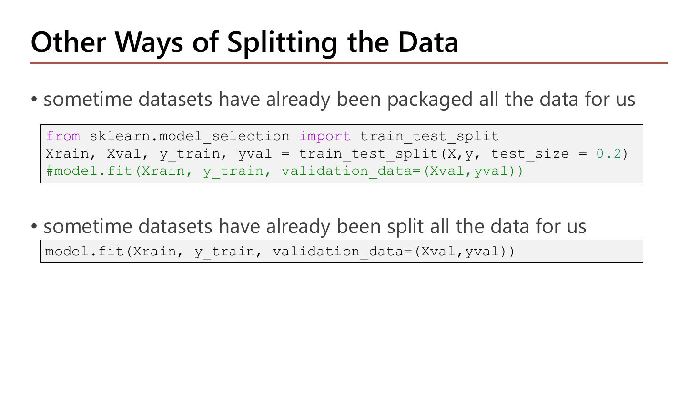
จนถึงตอนนี้เราเห็นวิธีแบ่ง validation มาแล้วสองแบบ: validation_split=0.2 (ให้ Keras ตัดให้) ในหน้า 31 และ validation_data=(Xval,yval) (เตรียมมาเอง) ในหน้า 22. หน้า 36 เติมกรณีที่สาม คือเมื่อ "datasets have already been packaged all the data for us" — ข้อมูลมาเป็นก้อนเดียวยังไม่แบ่ง เราต้องแบ่งเองด้วย train_test_split ของ scikit-learn ก่อน แล้วค่อยส่งเข้า fit; ส่วนกรณี "datasets have already been split all the data for us" คือแบ่งมาให้แล้ว (อย่าง MNIST) ก็ส่ง validation_data ได้เลย.
from sklearn.model_selection import train_test_split
Xrain, Xval, y_train, yval = train_test_split(X, y, test_size = 0.2)
#model.fit(Xrain, y_train, validation_data=(Xval,yval))
model.fit(Xrain, y_train, validation_data=(Xval,yval))| โค้ด | ทำอะไร |
|---|---|
| from sklearn.model_selection import train_test_split | ฟังก์ชันนี้อยู่ใน scikit-learn ไม่ใช่ Keras — ข้อสอบชอบถามว่า import มาจากโมดูลไหน |
| Xrain, Xval, y_train, yval = train_test_split(X, y, test_size = 0.2) | คืนค่า 4 ก้อนตามลำดับ X-train, X-test, y-train, y-test (สลับลำดับไม่ได้เด็ดขาด); test_size=0.2 = กันไว้ 20% เป็นชุดที่สอง. หมายเหตุ: ชื่อตัวแปร Xrain บนสไลด์สะกดตก "t" จาก Xtrain แต่ยังรันได้เพราะเป็นแค่ชื่อตัวแปรที่ใช้สอดคล้องกันทั้งสองบรรทัด |
| #model.fit(Xrain, y_train, validation_data=(Xval,yval)) | บรรทัดที่ถูกคอมเมนต์ไว้ก่อนเพื่อแสดงรูปแบบการเรียก |
| model.fit(Xrain, y_train, validation_data=(Xval,yval)) | เทรนด้วยก้อน train และใช้ก้อนที่แบ่งไว้เป็น validation; validation_data ต้องเป็น tuple ของ (ข้อมูล, ป้าย) — และใช้พร้อมกับ validation_split ไม่ได้ |
ถ้า X มี 60,000 ตัวอย่าง หลัง train_test_split(..., test_size=0.2) จะได้ Xrain.shape = (48000, 784) และ Xval.shape = (12000, 784) — ตัวเลขเดียวกับที่ validation_split=0.2 ให้ในหน้า 31 ต่างกันตรงที่ train_test_split สุ่มสลับข้อมูลก่อนแบ่ง ขณะที่ validation_split ของ Keras ตัดจากท้ายชุดโดยไม่สุ่ม (ถ้าข้อมูลเรียงตามคลาส validation จะมีแต่คลาสท้ายๆ ซึ่งเป็นกับดักจริงในทางปฏิบัติ)
categorical_crossentropy กับป้ายจำนวนเต็มที่ยังไม่แปลง: shape ของป้าย \((32,1)\) ไม่ตรงกับ output \((32,10)\) ⇒ error ทันทีตอน fit; กลับกัน ใช้ sparse_categorical_crossentropy กับป้าย one-hot ก็ error เช่นกัน. เปลี่ยนแถวในตารางหน้า 34 จาก single-label เป็น multilabel: softmax + categorical เปลี่ยนเป็น sigmoid + binary ทั้งคู่.shape=). กับดัก: เขียน Input(input_shape=(28,28))sparse_categorical_crossentropy ใช้เมื่อป้ายเป็นจำนวนเต็มและคลาส exclusive; ค่า loss เท่ากับ categorical แต่ประหยัดหน่วยความจำกว่า. กับดัก: บอกว่า sparse ให้ accuracy สูงกว่ากราฟ 40 epochs ในหน้า 32 แสดงให้เห็นแล้วว่า val_loss กระดกขึ้นเมื่อเทรนนานเกินไป. สองหน้าสุดท้ายของเลกเชอร์จึงปิดท้ายด้วยเครื่องมือแก้ overfitting ในรูปของโค้ด Keras และการบ้านให้ไปฝึกครบทั้ง workflow ด้วยตัวเอง.
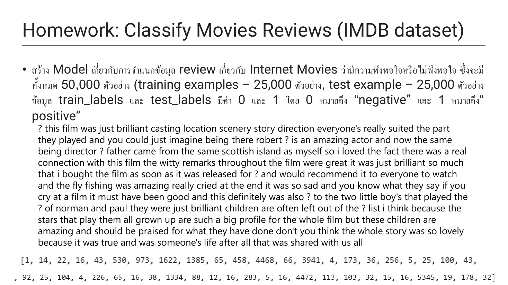
โจทย์คือสร้างโมเดลจำแนกรีวิวหนังจาก Internet Movie Database ว่าผู้เขียน "พึงพอใจหรือไม่พึงพอใจ" มีข้อมูลทั้งหมด 50,000 ตัวอย่าง แบ่งเป็น training 25,000 และ test 25,000 โดย train_labels และ test_labels มีค่า 0 กับ 1 — 0 หมายถึง negative และ 1 หมายถึง positive. สิ่งที่น่าสนใจที่สุดบนหน้านี้คือสองรูปแบบของข้อมูลเดียวกัน: ด้านบนเป็นข้อความรีวิวที่ถอดกลับเป็นคำแล้ว (ขึ้นต้นด้วย "? this film was just brilliant casting location scenery story direction…" โดยเครื่องหมาย ? คือคำที่ไม่อยู่ในพจนานุกรมที่เลือกไว้) ส่วนด้านล่างเป็นรีวิวเดียวกันในรูปลิสต์ของจำนวนเต็ม [1, 14, 22, 16, 43, 530, 973, 1622, 1385, 65, 458, 4468, ...] — แต่ละเลขคือดัชนีของคำในพจนานุกรม (เลขยิ่งน้อยยิ่งเป็นคำที่พบบ่อย). นี่คือบทเรียนที่ต่อจากหน้า 25 โดยตรง: เครือข่ายไม่เคยเห็น "ภาพ" หรือ "ข้อความ" — มันเห็นแต่ตัวเลขเสมอ งานของเราคือแปลงข้อมูลดิบให้เป็นตัวเลขที่มีรูปทรงคงที่.
เชื่อมกับตารางหน้า 34: งานนี้เป็น binary classification ⇒ output layer ต้องเป็น Dense(1, activation='sigmoid') และ loss ต้องเป็น binary_crossentropy — ไม่ใช่ softmax 10 node แบบ MNIST. และเพราะแต่ละรีวิวยาวไม่เท่ากัน ต้องแปลงเป็นเวกเตอร์ความยาวคงที่ก่อน (เช่น multi-hot ความยาว 10,000 ตามจำนวนคำที่เลือก) เครือข่าย Dense จึงจะรับได้.
![Slide Overcome Overfitting: L2 regularization adds cost proportional to the square of the value of the weight coefficients and is added by passing weight regularizer instances to layers as keyword arguments, shown with Dense(100, activation elu, kernel_initializer he_normal, kernel_regularizer=keras.regularizers.l2(0.01)); Dropout deactivates neurons by the dropout rate and is used via a dropout layer applied to the output of the layer immediately before it, shown in a Sequential model with Flatten(input_shape=[28,28]), Dense(300, elu, he_normal), Dropout(rate=0.2), Dense(100, elu, he_normal), Dropout(rate=0.2), Dense(10, softmax); two validation-loss charts show the L2 model and the dropout model rising less steeply than the original model](../assets/slides/dl5-p38-overcome-overfitting-keras.png)
สไลด์สุดท้ายแปลงทฤษฎี regularization จาก Lesson 4 §6 เป็นโค้ดสองบรรทัด. L2 Regularization อธิบายไว้ว่าคือการ "add cost proportional to the square of the value of the weight coefficients" คือบวกค่าปรับที่แปรผันตามกำลังสองของ weight เข้าไปใน cost และวิธีใส่คือ "passing weight regularizer instances to layers as keyword arguments" — ส่งออบเจ็กต์ regularizer เข้าไปเป็นอาร์กิวเมนต์ของ layer. Dropout อธิบายว่า "deactivate neuron by the dropout rate" คือปิดการทำงานของ neuron ตามอัตราที่กำหนด และใช้งานโดยเพิ่มเป็น layer ซึ่ง "is applied to the output of the layer immediately before it" — ทำงานกับ output ของ layer ที่อยู่ก่อนหน้ามันทันที. กราฟ validation loss สองรูปทางขวาแสดงผล: เส้นของโมเดลที่ใส่ L2 และเส้นของโมเดลที่ใส่ dropout ไต่ขึ้นช้ากว่าเส้นของ original model อย่างชัดเจน ⇒ overfit น้อยลงจริง.
layer = keras.layers.Dense(100, activation="elu",
kernel_initializer="he_normal",
kernel_regularizer=keras.regularizers.l2(0.01))
model = keras.models.Sequential([
keras.layers.Flatten(input_shape=[28, 28]),
keras.layers.Dense(300, activation="elu", kernel_initializer="he_normal"),
keras.layers.Dropout(rate=0.2),
keras.layers.Dense(100, activation="elu", kernel_initializer="he_normal"),
keras.layers.Dropout(rate=0.2),
keras.layers.Dense(10, activation="softmax")
])| โค้ด | ทำอะไร |
|---|---|
| kernel_regularizer=keras.regularizers.l2(0.01) | เพิ่มเทอม \(0.01\sum\theta^2\) ของ layer นี้เข้าไปใน cost ⇒ optimizer จะถูกดึงให้ weight เล็กลง; เลข 0.01 คือ \(\lambda\); คำว่า kernel ใน Keras หมายถึงเมทริกซ์ weight (ไม่รวม bias — ถ้าจะปรับ bias ต้องใช้ bias_regularizer ต่างหาก) |
| activation="elu" | ELU เป็นอีกตัวในตระกูล ReLU ที่ฝั่งลบไม่เป็น 0 สนิท จึงเลี่ยงปัญหา node ตายจากหน้า 3; ยังจับคู่กับ he_normal ตามกฎหน้า 8 |
| keras.layers.Flatten(input_shape=[28, 28]) | เหมือนหน้า 35 ทุกประการ (ที่นี่เขียน shape ด้วยวงเล็บเหลี่ยมแทน tuple ซึ่ง Keras รับได้ทั้งสองแบบ) |
| keras.layers.Dropout(rate=0.2) | วางไว้หลัง Dense(300) ⇒ ปิด node ของ Dense ชั้นนั้น 20% แบบสุ่มในแต่ละ step ของการเทรน; rate = สัดส่วนที่ปิด ไม่ใช่สัดส่วนที่เก็บ |
| keras.layers.Dense(10, activation="softmax") | ชั้น output ตามปกติ — และไม่มี Dropout ต่อท้าย เพราะจะทำลายความน่าจะเป็นที่ต้องรวมเป็น 1 |
โค้ดนี้ประกาศโครงสร้างจึงยังไม่พิมพ์อะไร; ถ้าเรียก model.summary() จะได้ flatten → 0, dense (300) → 235,500 (\(300\times785\)), dropout → 0, dense_1 (100) → 30,100 (\(100\times301\)), dropout_1 → 0, dense_2 (10) → 1,010 (\(10\times101\)) รวม 266,610 พารามิเตอร์. สังเกตว่า Dropout มี Param # = 0 เสมอ — มันไม่มีอะไรให้เรียนรู้ และตอน evaluate/predict Keras ปิดการทำงานของมันให้อัตโนมัติ
Dropout(rate=0.2) ตามสไลด์หน้า 38ผลรวมเดิม 10 ผลรวมใหม่ 8.75 — ใกล้เคียงกัน (ถ้าเฉลี่ยข้ามหลายรอบจะเท่ากันพอดี) จึงไม่ทำให้ layer ถัดไปเห็นสเกลเปลี่ยน
Dropout(0.6)ระวังสับสน: สไลด์ Lecture 4 พูดถึง keep_prob = ความน่าจะเป็นที่เก็บ node ไว้ ส่วน Keras ใช้ rate = สัดส่วนที่ปิด — สองค่านี้บวกกันได้ 1 เสมอ. ถ้าข้อสอบให้ rate=0.3 แล้วถาม keep_prob คำตอบคือ 0.7
kernel_regularizer, Dropout) แทนสูตรทั้งหมดได้เพราะ Keras แยก "สถาปัตยกรรม" ออกจาก "พฤติกรรมตอนเทรน" — ผู้ใช้ประกาศเจตนา แล้ว autodiff (Lesson 3 §4) หาอนุพันธ์ของเทอมปรับให้เอง.kernel_regularizer=keras.regularizers.l2(0.01). กับดัก: บอกว่าเป็นค่าสัมบูรณ์ของ weight (นั่นคือ L1) หรือใส่เป็น layer แยกrate=0.2 หมายถึงปิด 20% (keep_prob = 0.8). กับดักคลาสสิก: ตีความว่าเก็บไว้ 20%mnist.load_data() จนถึง np.argmax(model.predict(...)) พร้อมคำนวณ 13,002 พารามิเตอร์ และ 750 mini-batch ได้ — ครบเนื้อหา Lecture 1–5 แล้ว บทถัดไป (Lesson 6) ต่อด้วย callbacks และการจูน hyperparameter.
| หน้า | เนื้อหา | สถานะ |
|---|---|---|
| 1 | Vanishing and Exploding Gradients — ที่มาจาก chain rule, นิยาม 2 ปัญหา | ✓ หัวข้อ 1 (มีรูป + คำนวณตัวคูณสะสม) |
| 2 | Activation Function — sigmoid saturation, อนุพันธ์สูงสุด 0.25 | ✓ หัวข้อ 1.1 (มีรูป) |
| 3 | Activation Function (2) — ReLU, dying ReLU, gradient clipping | ✓ หัวข้อ 1.2 (มีรูป + คำนวณ clipping 2 แบบ) |
| 4 | Weight Initialization — ต้องสุ่ม, scale สำคัญกว่าชนิดการแจกแจง | ✓ หัวข้อ 2 (มีรูป) |
| 5 | The Problem of Random Initialization — โจทย์ mean/variance ที่เว้นว่าง | ✓ หัวข้อ 2.2 (มีรูป + เติมคำตอบเต็ม) |
| 6 | Weight initialization Techniques — LeCun / Xavier / He | ✓ หัวข้อ 2.3 (มีรูป + ตาราง + พิสูจน์ 2/fan_in) |
| 7 | Experiments — Zero vs Random vs He Initialization | ✓ หัวข้อ 2.4 (มีรูป + อ่านตัวเลข 0.69306, 84.14%) |
| 8 | Issues about Weight Initialization — คู่ที่ถูกต้องและข้อจำกัด | ✓ หัวข้อ 2.5 (มีรูป) |
| 9 | Why Normalization helps Optimization — contour วงรี vs วงกลม | ✓ หัวข้อ 3.0 (มีรูป + สูตร z-score) |
| 10–11 | Batch Normalization / (2) — Implementation, ช่วง Linear ของ sigmoid | ✓ หัวข้อ 3.0B (มีรูปทั้งสองหน้า) |
| 12 | Batch Normalization (BN) — สูตร 4 บรรทัดและความหมายทุกสัญลักษณ์ | ✓ หัวข้อ 3.1 (มีรูป + คำนวณ BN ของ batch 4 ตัว) |
| 13–14 | Normalize z (pre-activation) / Normalize a (post-activation) + โค้ด | ✓ หัวข้อ 3.2 (มีรูป + โค้ด 2 ชุด + นับพารามิเตอร์ 4n) |
| 15 | Issues about BN — training time vs test time, moving average, momentum | ✓ หัวข้อ 3.3 (มีรูป + คำนวณ moving mean) |
| 16 | Issues about BN (2) — ข้อดีทั้งชุดของ BN | ✓ หัวข้อ 3.4 (มีรูป) |
| 17 | Issues about BN (3) — regularization, batch เล็ก, dropout หลัง BN + โค้ด | ✓ หัวข้อ 3.5 (มีรูป + โค้ด) |
| 18 | From Batch Normalization to Layer Normalization — โจทย์ μ ที่เว้นว่าง | ✓ หัวข้อ 4 (มีรูป + เติมคำตอบครบ 4 ตัว) |
| 19 | Why Layer Normalization? — 3 ข้อดีและตารางเทียบ BN/LN | ✓ หัวข้อ 4 (มีรูป) |
| 20–21 | Keras API / Typical Keras Workflow — นิยามและ 5 ขั้นตอน | ✓ หัวข้อ 5.0 (มีรูปทั้งสองหน้า) |
| 22 | Begin with Circle Dataset — สคริปต์ Keras ฉบับเต็ม | ✓ หัวข้อ 5.1 (มีรูป + โค้ดอธิบายทุกบรรทัด) |
| 23 | Understand Core Keras APIs via Examples — โจทย์ MNIST | ✓ หัวข้อ 5.2 (มีรูป) |
| 24 | Loading the MNIST Dataset in Keras — โค้ดโหลดและ shape | ✓ หัวข้อ 5.3 (มีรูป + โค้ด + ผลลัพธ์จริง) |
| 25 | Data Exploration — ตารางพิกเซลและการวาดภาพ | ✓ หัวข้อ 5.4 (มีรูป + โค้ด) |
| 26 | Data Preparation — reshape เป็น 784 และหาร 255 | ✓ หัวข้อ 5.5 (มีรูป + โค้ด) |
| 27 | Preparing the Labels — one-hot vs integer label | ✓ หัวข้อ 5.6 (มีรูป + โค้ด + ผลลัพธ์) |
| 28 | Build the Model with Sequential API — Alternative 1 / 2, Dense layer | ✓ หัวข้อ 5.7 (มีรูป + โค้ด) |
| 29 | Concise Summary of the Network Topology — นับพารามิเตอร์ 13,002 | ✓ หัวข้อ 5.8 (มีรูป + คำนวณเต็ม) |
| 30 | Compile the model — loss, optimizer, metrics | ✓ หัวข้อ 5.9 (มีรูป + โค้ด) |
| 31 | Launch the training — fit และสูตรนับ mini-batch 750 | ✓ หัวข้อ 5.10 (มีรูป + โค้ด + คำนวณเต็ม) |
| 32 | Plot the Performance of the Model — 5 epochs vs 40 epochs | ✓ หัวข้อ 5.11 (มีรูป + โค้ด) |
| 33 | Check the Model on the Test Set — evaluate และ predict | ✓ หัวข้อ 5.12 (มีรูป + โค้ด + ผลลัพธ์จริง) |
| 34 | More Compile Options — ตาราง activation/loss และ sparse vs categorical | ✓ หัวข้อ 6 (มีรูป + ตาราง + คำนวณ loss) |
| 35 | Using Input(), Flatten() and Softmax() | ✓ หัวข้อ 6.1 (มีรูป + โค้ด 2 รูปแบบ) |
| 36 | Other Ways of Splitting the Data — train_test_split | ✓ หัวข้อ 6.2 (มีรูป + โค้ด) |
| 37 | Homework: Classify Movies Reviews (IMDB dataset) | ✓ หัวข้อ 7.1 (มีรูป + วิเคราะห์โจทย์) |
| 38 | Overcome Overfitting — L2 และ Dropout ในโค้ด Keras | ✓ หัวข้อ 7.2 (มีรูป + โค้ด + คำนวณ rate) |
สงสัยตรงไหน ถามได้เลยในแชท — ผมเป็นผู้สอนของคุณ ถามซ้ำได้ ถามลึกได้ ไม่ต้องเกรงใจ.